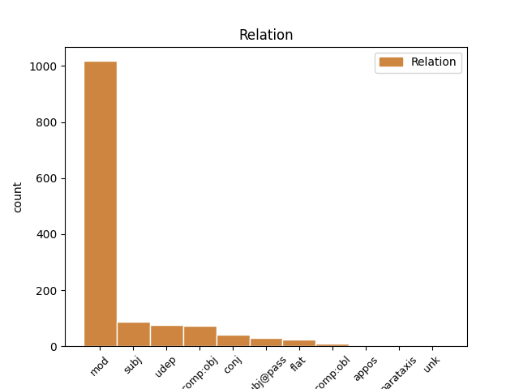
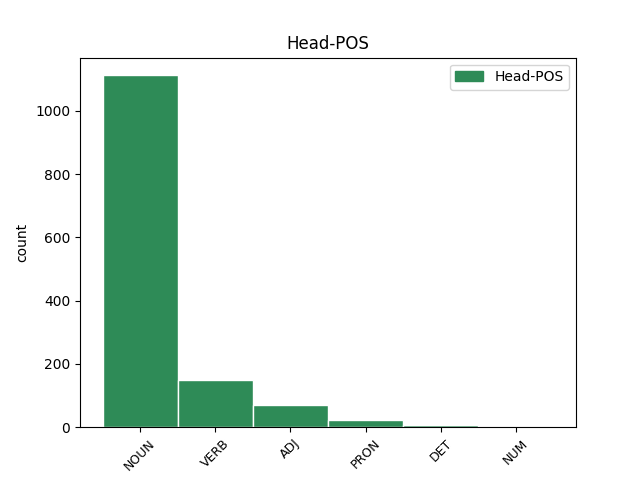
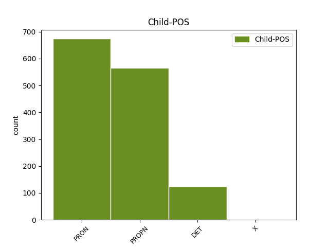

Distribution of features within this leaf



Agreement Rules sorted by frequency.
- When the dependent token is the modifer(mod) of the head token, and the head token is NOUN and the dependent token is PRON.
1 Balsuojant _ _ _ _ 0 _ _ _
2 kiekvienas _ _ _ _ 0 _ _ _
3 Komiteto _ _ _ _ 0 _ _ _
4 narys _ _ _ _ 0 _ _ _
5 turi _ _ _ _ 0 _ _ _
6 po _ _ _ _ 0 _ _ _
7 vieną vienas PRON įv.vyr.vns.G. Case=Acc|Definite=Ind|Gender=Masc|Number=Sing|PronType=Ind 8 mod _ _
8 balsą balsas NOUN dkt.vyr.vns.G. Case=Acc|Gender=Masc|Number=Sing 0 _ _ _
9 . _ _ _ _ 0 _ _ _
1 23 _ _ _ _ 0 _ _ _
2 . _ _ _ _ 0 _ _ _
3 Kalendoriniams _ _ _ _ 0 _ _ _
4 metams _ _ _ _ 0 _ _ _
5 pasibaigus _ _ _ _ 0 _ _ _
6 , _ _ _ _ 0 _ _ _
7 Komiteto _ _ _ _ 0 _ _ _
8 sekretorius _ _ _ _ 0 _ _ _
9 turimus _ _ _ _ 0 _ _ _
10 dokumentus _ _ _ _ 0 _ _ _
11 , _ _ _ _ 0 _ _ _
12 susijusius _ _ _ _ 0 _ _ _
13 su _ _ _ _ 0 _ _ _
14 Komiteto _ _ _ _ 0 _ _ _
15 posėdžiais _ _ _ _ 0 _ _ _
16 , _ _ _ _ 0 _ _ _
17 perduoda _ _ _ _ 0 _ _ _
18 saugoti _ _ _ _ 0 _ _ _
19 Aplinkos _ _ _ _ 0 _ _ _
20 ministerijai _ _ _ _ 0 _ _ _
21 , _ _ _ _ 0 _ _ _
22 kur _ _ _ _ 0 _ _ _
23 jie _ _ _ _ 0 _ _ _
24 saugomi _ _ _ _ 0 _ _ _
25 5 _ _ _ _ 0 _ _ _
26 metus _ _ _ _ 0 _ _ _
27 , _ _ _ _ 0 _ _ _
28 vadovaujantis _ _ _ _ 0 _ _ _
29 Lietuvos _ _ _ _ 0 _ _ _
30 archyvų _ _ _ _ 0 _ _ _
31 departamento _ _ _ _ 0 _ _ _
32 prie _ _ _ _ 0 _ _ _
33 Lietuvos Lietuva PROPN dkt.tikr.mot.vns.K. Case=Gen|Gender=Fem|Number=Sing 34 mod _ _
34 Respublikos respublika NOUN dkt.mot.vns.K. Case=Gen|Gender=Fem|Number=Sing 0 _ _ _
35 Vyriausybės _ _ _ _ 0 _ _ _
36 1997 _ _ _ _ 0 _ _ _
37 m _ _ _ _ 0 _ _ _
38 . _ _ _ _ 0 _ _ _
39 rugpjūčio _ _ _ _ 0 _ _ _
40 15 _ _ _ _ 0 _ _ _
41 d _ _ _ _ 0 _ _ _
42 . _ _ _ _ 0 _ _ _
43 įsakymu _ _ _ _ 0 _ _ _
44 Nr _ _ _ _ 0 _ _ _
45 . _ _ _ _ 0 _ _ _
46 38 _ _ _ _ 0 _ _ _
47 „ _ _ _ _ 0 _ _ _
48 Dėl _ _ _ _ 0 _ _ _
49 bendrųjų _ _ _ _ 0 _ _ _
50 dokumentų _ _ _ _ 0 _ _ _
51 saugojimo _ _ _ _ 0 _ _ _
52 terminų _ _ _ _ 0 _ _ _
53 “ _ _ _ _ 0 _ _ _
54 ( _ _ _ _ 0 _ _ _
55 Žin _ _ _ _ 0 _ _ _
56 . _ _ _ _ 0 _ _ _
57 , _ _ _ _ 0 _ _ _
58 1997 _ _ _ _ 0 _ _ _
59 , _ _ _ _ 0 _ _ _
60 Nr _ _ _ _ 0 _ _ _
61 . _ _ _ _ 0 _ _ _
62 78-006 _ _ _ _ 0 _ _ _
63 ) _ _ _ _ 0 _ _ _
64 . _ _ _ _ 0 _ _ _
1 Direktorius direktorius NOUN dkt.vyr.vns.V. Case=Nom|Gender=Masc|Number=Sing 0 _ _ _
2 Algirdas _ _ _ _ 0 _ _ _
3 Kunčinas Kunčinas PROPN dkt.tikr.vyr.vns.V. Case=Nom|Gender=Masc|Number=Sing 1 flat _ _
1 7.4 _ _ _ _ 0 _ _ _
2 . _ _ _ _ 0 _ _ _
3 reikalauti _ _ _ _ 0 _ _ _
4 , _ _ _ _ 0 _ _ _
5 kad _ _ _ _ 0 _ _ _
6 Programos _ _ _ _ 0 _ _ _
7 dalyviai _ _ _ _ 0 _ _ _
8 vykdytų _ _ _ _ 0 _ _ _
9 teisės _ _ _ _ 0 _ _ _
10 aktų _ _ _ _ 0 _ _ _
11 jiems jis PRON įv.vyr.dgs.N. Case=Dat|Definite=Ind|Gender=Masc|Number=Plur|Person=3|PronType=Prs 12 comp:obj _ _
12 nustatytus nustatyti VERB vksm.dlv.neveik.būt.vyr.dgs.G. Case=Acc|Definite=Ind|Gender=Masc|Number=Plur|Polarity=Pos|Tense=Past|VerbForm=Part|Voice=Pass 0 _ _ _
13 reikalavimus _ _ _ _ 0 _ _ _
14 ir _ _ _ _ 0 _ _ _
15 prisiimtus _ _ _ _ 0 _ _ _
16 sutartinius _ _ _ _ 0 _ _ _
17 įsipareigojimus _ _ _ _ 0 _ _ _
18 ; _ _ _ _ 0 _ _ _
1 Tarptautiniuose _ _ _ _ 0 _ _ _
2 renginiuose _ _ _ _ 0 _ _ _
3 ir _ _ _ _ 0 _ _ _
4 darbo _ _ _ _ 0 _ _ _
5 grupėse _ _ _ _ 0 _ _ _
6 skaityti _ _ _ _ 0 _ _ _
7 šie _ _ _ _ 0 _ _ _
8 pranešimai _ _ _ _ 0 _ _ _
9 : _ _ _ _ 0 _ _ _
10 „ _ _ _ _ 0 _ _ _
11 Duomenų _ _ _ _ 0 _ _ _
12 apsauga _ _ _ _ 0 _ _ _
13 Lietuvoje _ _ _ _ 0 _ _ _
14 “ _ _ _ _ 0 _ _ _
15 , _ _ _ _ 0 _ _ _
16 „ _ _ _ _ 0 _ _ _
17 E-valdžios _ _ _ _ 0 _ _ _
18 plėtra _ _ _ _ 0 _ _ _
19 Lietuvoje _ _ _ _ 0 _ _ _
20 : _ _ _ _ 0 _ _ _
21 asmens _ _ _ _ 0 _ _ _
22 tapatybės _ _ _ _ 0 _ _ _
23 nustatymas _ _ _ _ 0 _ _ _
24 ir _ _ _ _ 0 _ _ _
25 duomenų _ _ _ _ 0 _ _ _
26 apsauga _ _ _ _ 0 _ _ _
27 “ _ _ _ _ 0 _ _ _
28 , _ _ _ _ 0 _ _ _
29 „ _ _ _ _ 0 _ _ _
30 Tiesioginė _ _ _ _ 0 _ _ _
31 rinkodara _ _ _ _ 0 _ _ _
32 ir _ _ _ _ 0 _ _ _
33 privatumo _ _ _ _ 0 _ _ _
34 problemos _ _ _ _ 0 _ _ _
35 “ _ _ _ _ 0 _ _ _
36 , _ _ _ _ 0 _ _ _
37 „ _ _ _ _ 0 _ _ _
38 Vaizdo _ _ _ _ 0 _ _ _
39 stebėjimas _ _ _ _ 0 _ _ _
40 ir _ _ _ _ 0 _ _ _
41 duomenų _ _ _ _ 0 _ _ _
42 apsauga _ _ _ _ 0 _ _ _
43 “ _ _ _ _ 0 _ _ _
44 , _ _ _ _ 0 _ _ _
45 „ _ _ _ _ 0 _ _ _
46 Duomenų _ _ _ _ 0 _ _ _
47 apsaugos _ _ _ _ 0 _ _ _
48 naujovės naujovė NOUN dkt.mot.dgs.V. Case=Nom|Gender=Fem|Number=Plur 0 _ _ _
49 Lietuvoje Lietuva PROPN dkt.tikr.mot.vns.Vt. Case=Loc|Gender=Fem|Number=Sing 48 udep _ _
50 “ _ _ _ _ 0 _ _ _
51 , _ _ _ _ 0 _ _ _
52 „ _ _ _ _ 0 _ _ _
53 Lietuvos _ _ _ _ 0 _ _ _
54 duomenų _ _ _ _ 0 _ _ _
55 apsaugos _ _ _ _ 0 _ _ _
56 pažanga _ _ _ _ 0 _ _ _
57 telekomunikacijose _ _ _ _ 0 _ _ _
58 “ _ _ _ _ 0 _ _ _
59 , _ _ _ _ 0 _ _ _
60 „ _ _ _ _ 0 _ _ _
61 Valstybinės _ _ _ _ 0 _ _ _
62 duomenų _ _ _ _ 0 _ _ _
63 apsaugos _ _ _ _ 0 _ _ _
64 inspekcijos _ _ _ _ 0 _ _ _
65 patirtis _ _ _ _ 0 _ _ _
66 taikant _ _ _ _ 0 _ _ _
67 Direktyvos _ _ _ _ 0 _ _ _
68 2002 _ _ _ _ 0 _ _ _
69 58 _ _ _ _ 0 _ _ _
70 EB _ _ _ _ 0 _ _ _
71 5 _ _ _ _ 0 _ _ _
72 straipsnio _ _ _ _ 0 _ _ _
73 2 _ _ _ _ 0 _ _ _
74 dalyje _ _ _ _ 0 _ _ _
75 numatytą _ _ _ _ 0 _ _ _
76 išimtį _ _ _ _ 0 _ _ _
77 “ _ _ _ _ 0 _ _ _
78 , _ _ _ _ 0 _ _ _
79 „ _ _ _ _ 0 _ _ _
80 Duomenų _ _ _ _ 0 _ _ _
81 apsaugos _ _ _ _ 0 _ _ _
82 problemos _ _ _ _ 0 _ _ _
83 atliekant _ _ _ _ 0 _ _ _
84 vaizdo _ _ _ _ 0 _ _ _
85 stebėjimą _ _ _ _ 0 _ _ _
86 “ _ _ _ _ 0 _ _ _
87 , _ _ _ _ 0 _ _ _
88 „ _ _ _ _ 0 _ _ _
89 Įgyvendinimo _ _ _ _ 0 _ _ _
90 grupės _ _ _ _ 0 _ _ _
91 tikrinimas _ _ _ _ 0 _ _ _
92 privačiame _ _ _ _ 0 _ _ _
93 sveikatos _ _ _ _ 0 _ _ _
94 draudimo _ _ _ _ 0 _ _ _
95 sektoriuje _ _ _ _ 0 _ _ _
96 2006 _ _ _ _ 0 _ _ _
97 “ _ _ _ _ 0 _ _ _
98 . _ _ _ _ 0 _ _ _
1 Anot _ _ _ _ 0 _ _ _
2 dietologės _ _ _ _ 0 _ _ _
3 , _ _ _ _ 0 _ _ _
4 žuvį _ _ _ _ 0 _ _ _
5 galima _ _ _ _ 0 _ _ _
6 rinktis _ _ _ _ 0 _ _ _
7 ir _ _ _ _ 0 _ _ _
8 pigesnę _ _ _ _ 0 _ _ _
9 – _ _ _ _ 0 _ _ _
10 ji jis PRON įv.mot.vns.V. Case=Nom|Definite=Ind|Gender=Fem|Number=Sing|Person=3|PronType=Prs 13 subj _ _
11 tikrai _ _ _ _ 0 _ _ _
12 nebus _ _ _ _ 0 _ _ _
13 prastesnė prastas ADJ bdv.aukšt.mot.vns.V. Case=Nom|Definite=Ind|Degree=Cmp|Gender=Fem|Number=Sing 0 _ _ _
14 . _ _ _ _ 0 _ _ _
1 Tai tas DET įv.bev. Definite=Ind|Gender=Neut|PronType=Dem 3 subj _ _
2 labai _ _ _ _ 0 _ _ _
3 skanu skanus ADJ bdv.nelygin.bev. Definite=Ind|Degree=Pos|Gender=Neut 0 _ _ _
4 . _ _ _ _ 0 _ _ _
1 Taip _ _ _ _ 0 _ _ _
2 pat _ _ _ _ 0 _ _ _
3 suorganizuotas _ _ _ _ 0 _ _ _
4 seminaras _ _ _ _ 0 _ _ _
5 „ _ _ _ _ 0 _ _ _
6 Asmens _ _ _ _ 0 _ _ _
7 duomenų _ _ _ _ 0 _ _ _
8 apsauga _ _ _ _ 0 _ _ _
9 “ _ _ _ _ 0 _ _ _
10 teisėsaugos _ _ _ _ 0 _ _ _
11 institucijoms _ _ _ _ 0 _ _ _
12 , _ _ _ _ 0 _ _ _
13 kurio kuris DET įv.vyr.vns.K. Case=Gen|Definite=Ind|Gender=Masc|Number=Sing|PronType=Int 14 mod _ _
14 metu metas NOUN dkt.vyr.vns.Įn. Case=Ins|Gender=Masc|Number=Sing 0 _ _ _
15 aptarti _ _ _ _ 0 _ _ _
16 bendrieji _ _ _ _ 0 _ _ _
17 asmens _ _ _ _ 0 _ _ _
18 duomenų _ _ _ _ 0 _ _ _
19 apsaugos _ _ _ _ 0 _ _ _
20 klausimai _ _ _ _ 0 _ _ _
21 , _ _ _ _ 0 _ _ _
22 duomenų _ _ _ _ 0 _ _ _
23 apsaugos _ _ _ _ 0 _ _ _
24 reikalavimai _ _ _ _ 0 _ _ _
25 pagal _ _ _ _ 0 _ _ _
26 Šengeno _ _ _ _ 0 _ _ _
27 konvenciją _ _ _ _ 0 _ _ _
28 . _ _ _ _ 0 _ _ _
1 23 _ _ _ _ 0 _ _ _
2 . _ _ _ _ 0 _ _ _
3 Kalendoriniams _ _ _ _ 0 _ _ _
4 metams _ _ _ _ 0 _ _ _
5 pasibaigus _ _ _ _ 0 _ _ _
6 , _ _ _ _ 0 _ _ _
7 Komiteto _ _ _ _ 0 _ _ _
8 sekretorius _ _ _ _ 0 _ _ _
9 turimus _ _ _ _ 0 _ _ _
10 dokumentus _ _ _ _ 0 _ _ _
11 , _ _ _ _ 0 _ _ _
12 susijusius _ _ _ _ 0 _ _ _
13 su _ _ _ _ 0 _ _ _
14 Komiteto _ _ _ _ 0 _ _ _
15 posėdžiais _ _ _ _ 0 _ _ _
16 , _ _ _ _ 0 _ _ _
17 perduoda _ _ _ _ 0 _ _ _
18 saugoti _ _ _ _ 0 _ _ _
19 Aplinkos _ _ _ _ 0 _ _ _
20 ministerijai _ _ _ _ 0 _ _ _
21 , _ _ _ _ 0 _ _ _
22 kur _ _ _ _ 0 _ _ _
23 jie jie PRON įv.vyr.dgs.V. Case=Nom|Definite=Ind|Gender=Masc|Number=Plur|PronType=Ind 24 subj@pass _ _
24 saugomi saugoti VERB vksm.dlv.neveik.es.vyr.dgs.V. Case=Nom|Definite=Ind|Gender=Masc|Number=Plur|Polarity=Pos|Tense=Pres|VerbForm=Part|Voice=Pass 0 _ _ _
25 5 _ _ _ _ 0 _ _ _
26 metus _ _ _ _ 0 _ _ _
27 , _ _ _ _ 0 _ _ _
28 vadovaujantis _ _ _ _ 0 _ _ _
29 Lietuvos _ _ _ _ 0 _ _ _
30 archyvų _ _ _ _ 0 _ _ _
31 departamento _ _ _ _ 0 _ _ _
32 prie _ _ _ _ 0 _ _ _
33 Lietuvos _ _ _ _ 0 _ _ _
34 Respublikos _ _ _ _ 0 _ _ _
35 Vyriausybės _ _ _ _ 0 _ _ _
36 1997 _ _ _ _ 0 _ _ _
37 m _ _ _ _ 0 _ _ _
38 . _ _ _ _ 0 _ _ _
39 rugpjūčio _ _ _ _ 0 _ _ _
40 15 _ _ _ _ 0 _ _ _
41 d _ _ _ _ 0 _ _ _
42 . _ _ _ _ 0 _ _ _
43 įsakymu _ _ _ _ 0 _ _ _
44 Nr _ _ _ _ 0 _ _ _
45 . _ _ _ _ 0 _ _ _
46 38 _ _ _ _ 0 _ _ _
47 „ _ _ _ _ 0 _ _ _
48 Dėl _ _ _ _ 0 _ _ _
49 bendrųjų _ _ _ _ 0 _ _ _
50 dokumentų _ _ _ _ 0 _ _ _
51 saugojimo _ _ _ _ 0 _ _ _
52 terminų _ _ _ _ 0 _ _ _
53 “ _ _ _ _ 0 _ _ _
54 ( _ _ _ _ 0 _ _ _
55 Žin _ _ _ _ 0 _ _ _
56 . _ _ _ _ 0 _ _ _
57 , _ _ _ _ 0 _ _ _
58 1997 _ _ _ _ 0 _ _ _
59 , _ _ _ _ 0 _ _ _
60 Nr _ _ _ _ 0 _ _ _
61 . _ _ _ _ 0 _ _ _
62 78-006 _ _ _ _ 0 _ _ _
63 ) _ _ _ _ 0 _ _ _
64 . _ _ _ _ 0 _ _ _
1 Pavyzdžiui _ _ _ _ 0 _ _ _
2 , _ _ _ _ 0 _ _ _
3 autorė _ _ _ _ 0 _ _ _
4 pastebi _ _ _ _ 0 _ _ _
5 , _ _ _ _ 0 _ _ _
6 kad _ _ _ _ 0 _ _ _
7 Vakaruose _ _ _ _ 0 _ _ _
8 ir _ _ _ _ 0 _ _ _
9 Rytų _ _ _ _ 0 _ _ _
10 Europoje _ _ _ _ 0 _ _ _
11 skirtingai _ _ _ _ 0 _ _ _
12 suvokiamas _ _ _ _ 0 _ _ _
13 subjektyvumas _ _ _ _ 0 _ _ _
14 : _ _ _ _ 0 _ _ _
15 „ _ _ _ _ 0 _ _ _
16 Vakaruose _ _ _ _ 0 _ _ _
17 jis jis PRON įv.vyr.vns.V. Case=Nom|Definite=Ind|Gender=Masc|Number=Sing|Person=3|PronType=Prs 18 subj _ _
18 suvokiamas suvokti VERB vksm.dlv.neveik.es.vyr.vns.V. Case=Nom|Definite=Ind|Gender=Masc|Number=Sing|Polarity=Pos|Tense=Pres|VerbForm=Part|Voice=Pass 0 _ _ _
19 kaip _ _ _ _ 0 _ _ _
20 vertinimas _ _ _ _ 0 _ _ _
21 , _ _ _ _ 0 _ _ _
22 komentavimas _ _ _ _ 0 _ _ _
23 , _ _ _ _ 0 _ _ _
24 o _ _ _ _ 0 _ _ _
25 Rytuose _ _ _ _ 0 _ _ _
26 – _ _ _ _ 0 _ _ _
27 kaip _ _ _ _ 0 _ _ _
28 informacijos _ _ _ _ 0 _ _ _
29 beletrizacija _ _ _ _ 0 _ _ _
30 arba _ _ _ _ 0 _ _ _
31 publicistika _ _ _ _ 0 _ _ _
32 , _ _ _ _ 0 _ _ _
33 taigi _ _ _ _ 0 _ _ _
34 čia _ _ _ _ 0 _ _ _
35 subjektyvumas _ _ _ _ 0 _ _ _
36 tapatinamas _ _ _ _ 0 _ _ _
37 ne _ _ _ _ 0 _ _ _
38 tiek _ _ _ _ 0 _ _ _
39 su _ _ _ _ 0 _ _ _
40 asmens _ _ _ _ 0 _ _ _
41 , _ _ _ _ 0 _ _ _
42 kiek _ _ _ _ 0 _ _ _
43 su _ _ _ _ 0 _ _ _
44 ištiso _ _ _ _ 0 _ _ _
45 publicistikos _ _ _ _ 0 _ _ _
46 funkcinio _ _ _ _ 0 _ _ _
47 stiliaus _ _ _ _ 0 _ _ _
48 samprata _ _ _ _ 0 _ _ _
49 “ _ _ _ _ 0 _ _ _
50 ( _ _ _ _ 0 _ _ _
51 p _ _ _ _ 0 _ _ _
52 . _ _ _ _ 0 _ _ _
53 71 _ _ _ _ 0 _ _ _
54 ) _ _ _ _ 0 _ _ _
55 . _ _ _ _ 0 _ _ _
1 6.4 _ _ _ _ 0 _ _ _
2 . _ _ _ _ 0 _ _ _
3 stokojant _ _ _ _ 0 _ _ _
4 lėšų _ _ _ _ 0 _ _ _
5 valstybės _ _ _ _ 0 _ _ _
6 paramai _ _ _ _ 0 _ _ _
7 teikti _ _ _ _ 0 _ _ _
8 , _ _ _ _ 0 _ _ _
9 derina _ _ _ _ 0 _ _ _
10 Programą _ _ _ _ 0 _ _ _
11 įgyvendinančios _ _ _ _ 0 _ _ _
12 agentūros _ _ _ _ 0 _ _ _
13 sudarytą _ _ _ _ 0 _ _ _
14 pretendentų _ _ _ _ 0 _ _ _
15 valstybės _ _ _ _ 0 _ _ _
16 paramai _ _ _ _ 0 _ _ _
17 gauti _ _ _ _ 0 _ _ _
18 sąrašą _ _ _ _ 0 _ _ _
19 , _ _ _ _ 0 _ _ _
20 kuris kuris DET įv.vyr.vns.V. Case=Nom|Definite=Ind|Gender=Masc|Number=Sing|PronType=Int 21 subj@pass _ _
21 parengiamas parengti VERB vksm.dlv.neveik.es.vyr.vns.V. Case=Nom|Definite=Ind|Gender=Masc|Number=Sing|Polarity=Pos|Tense=Pres|VerbForm=Part|Voice=Pass 0 _ _ _
22 vadovaujantis _ _ _ _ 0 _ _ _
23 Lietuvos _ _ _ _ 0 _ _ _
24 Respublikos _ _ _ _ 0 _ _ _
25 Vyriausybės _ _ _ _ 0 _ _ _
26 2004 _ _ _ _ 0 _ _ _
27 m _ _ _ _ 0 _ _ _
28 . _ _ _ _ 0 _ _ _
29 rugsėjo _ _ _ _ 0 _ _ _
30 23 _ _ _ _ 0 _ _ _
31 d _ _ _ _ 0 _ _ _
32 . _ _ _ _ 0 _ _ _
33 nutarimo _ _ _ _ 0 _ _ _
34 Nr _ _ _ _ 0 _ _ _
35 . _ _ _ _ 0 _ _ _
36 1213 _ _ _ _ 0 _ _ _
37 „ _ _ _ _ 0 _ _ _
38 Dėl _ _ _ _ 0 _ _ _
39 daugiabučių _ _ _ _ 0 _ _ _
40 namų _ _ _ _ 0 _ _ _
41 modernizavimo _ _ _ _ 0 _ _ _
42 programos _ _ _ _ 0 _ _ _
43 “ _ _ _ _ 0 _ _ _
44 3 _ _ _ _ 0 _ _ _
45 punkte _ _ _ _ 0 _ _ _
46 nurodytais _ _ _ _ 0 _ _ _
47 kriterijais _ _ _ _ 0 _ _ _
48 ; _ _ _ _ 0 _ _ _
1 Lietuviškųjų _ _ _ _ 0 _ _ _
2 spaudos _ _ _ _ 0 _ _ _
3 žanrų _ _ _ _ 0 _ _ _
4 klasifikavimą _ _ _ _ 0 _ _ _
5 apsunkina _ _ _ _ 0 _ _ _
6 dar _ _ _ _ 0 _ _ _
7 ir _ _ _ _ 0 _ _ _
8 tai _ _ _ _ 0 _ _ _
9 , _ _ _ _ 0 _ _ _
10 kad _ _ _ _ 0 _ _ _
11 kai kai PRON sampl.įv.vyr.dgs.V. Case=Nom|Definite=Ind|Gender=Masc|Hyph=Yes|Number=Plur|PronType=Ind 0 _ _ _
12 kurie _ _ _ _ 0 _ _ _
13 jų jis PRON įv.vyr.dgs.K. Case=Gen|Definite=Ind|Gender=Masc|Number=Plur|Person=3|PronType=Prs 11 mod _ _
14 yra _ _ _ _ 0 _ _ _
15 ganėtinai _ _ _ _ 0 _ _ _
16 nauji _ _ _ _ 0 _ _ _
17 Lietuvoje _ _ _ _ 0 _ _ _
18 , _ _ _ _ 0 _ _ _
19 tad _ _ _ _ 0 _ _ _
20 sunku _ _ _ _ 0 _ _ _
21 juos _ _ _ _ 0 _ _ _
22 įvardyti _ _ _ _ 0 _ _ _
23 ir _ _ _ _ 0 _ _ _
24 priskirti _ _ _ _ 0 _ _ _
25 tam _ _ _ _ 0 _ _ _
26 tikrai _ _ _ _ 0 _ _ _
27 grupei _ _ _ _ 0 _ _ _
28 , _ _ _ _ 0 _ _ _
29 nes _ _ _ _ 0 _ _ _
30 , _ _ _ _ 0 _ _ _
31 kaip _ _ _ _ 0 _ _ _
32 teisingai _ _ _ _ 0 _ _ _
33 pastebi _ _ _ _ 0 _ _ _
34 autorė _ _ _ _ 0 _ _ _
35 , _ _ _ _ 0 _ _ _
36 tik _ _ _ _ 0 _ _ _
37 įsitvirtinę _ _ _ _ 0 _ _ _
38 žanrai _ _ _ _ 0 _ _ _
39 turi _ _ _ _ 0 _ _ _
40 pavadinimus _ _ _ _ 0 _ _ _
41 . _ _ _ _ 0 _ _ _
1 7 _ _ _ _ 0 _ _ _
2 . _ _ _ _ 0 _ _ _
3 Partnerinės _ _ _ _ 0 _ _ _
4 įmonės _ _ _ _ 0 _ _ _
5 – _ _ _ _ 0 _ _ _
6 įmonės _ _ _ _ 0 _ _ _
7 , _ _ _ _ 0 _ _ _
8 pagal _ _ _ _ 0 _ _ _
9 šį _ _ _ _ 0 _ _ _
10 įstatymą _ _ _ _ 0 _ _ _
11 nepriskiriamos _ _ _ _ 0 _ _ _
12 susijusioms _ _ _ _ 0 _ _ _
13 įmonėms _ _ _ _ 0 _ _ _
14 ir _ _ _ _ 0 _ _ _
15 tiesiogiai _ _ _ _ 0 _ _ _
16 ar _ _ _ _ 0 _ _ _
17 netiesiogiai _ _ _ _ 0 _ _ _
18 ( _ _ _ _ 0 _ _ _
19 per _ _ _ _ 0 _ _ _
20 vieną vienas PRON įv.mot.vns.G. Case=Acc|Definite=Ind|Gender=Fem|Number=Sing|PronType=Ind 0 _ _ _
21 ar _ _ _ _ 0 _ _ _
22 kelias keli PRON įv.mot.G. Case=Acc|Definite=Ind|Gender=Fem|PronType=Ind 20 conj _ _
23 susijusias _ _ _ _ 0 _ _ _
24 įmones _ _ _ _ 0 _ _ _
25 ) _ _ _ _ 0 _ _ _
26 turinčios _ _ _ _ 0 _ _ _
27 nuo _ _ _ _ 0 _ _ _
28 25 _ _ _ _ 0 _ _ _
29 iki _ _ _ _ 0 _ _ _
30 50 _ _ _ _ 0 _ _ _
31 procentų _ _ _ _ 0 _ _ _
32 kitos _ _ _ _ 0 _ _ _
33 įmonės _ _ _ _ 0 _ _ _
34 akcijų _ _ _ _ 0 _ _ _
35 , _ _ _ _ 0 _ _ _
36 pajų _ _ _ _ 0 _ _ _
37 ar _ _ _ _ 0 _ _ _
38 kitokių _ _ _ _ 0 _ _ _
39 dalyvavimą _ _ _ _ 0 _ _ _
40 įmonės _ _ _ _ 0 _ _ _
41 kapitale _ _ _ _ 0 _ _ _
42 žyminčių _ _ _ _ 0 _ _ _
43 kapitalo _ _ _ _ 0 _ _ _
44 dalių _ _ _ _ 0 _ _ _
45 arba _ _ _ _ 0 _ _ _
46 tiesiogiai _ _ _ _ 0 _ _ _
47 ar _ _ _ _ 0 _ _ _
48 netiesiogiai _ _ _ _ 0 _ _ _
49 ( _ _ _ _ 0 _ _ _
50 pagal _ _ _ _ 0 _ _ _
51 balsavimo _ _ _ _ 0 _ _ _
52 sutartį _ _ _ _ 0 _ _ _
53 , _ _ _ _ 0 _ _ _
54 balsavimo _ _ _ _ 0 _ _ _
55 teisės _ _ _ _ 0 _ _ _
56 perleidimo _ _ _ _ 0 _ _ _
57 sutartį _ _ _ _ 0 _ _ _
58 , _ _ _ _ 0 _ _ _
59 įgaliojimą _ _ _ _ 0 _ _ _
60 ir _ _ _ _ 0 _ _ _
61 pan _ _ _ _ 0 _ _ _
62 . _ _ _ _ 0 _ _ _
63 ) _ _ _ _ 0 _ _ _
64 turinčios _ _ _ _ 0 _ _ _
65 nuo _ _ _ _ 0 _ _ _
66 25 _ _ _ _ 0 _ _ _
67 iki _ _ _ _ 0 _ _ _
68 50 _ _ _ _ 0 _ _ _
69 procentų _ _ _ _ 0 _ _ _
70 visų _ _ _ _ 0 _ _ _
71 kitos _ _ _ _ 0 _ _ _
72 įmonės _ _ _ _ 0 _ _ _
73 dalyvių _ _ _ _ 0 _ _ _
74 balsų _ _ _ _ 0 _ _ _
75 . _ _ _ _ 0 _ _ _
1 13 _ _ _ _ 0 _ _ _
2 . _ _ _ _ 0 _ _ _
3 Į _ _ _ _ 0 _ _ _
4 Komiteto _ _ _ _ 0 _ _ _
5 posėdžius _ _ _ _ 0 _ _ _
6 gali _ _ _ _ 0 _ _ _
7 būti _ _ _ _ 0 _ _ _
8 kviečiami _ _ _ _ 0 _ _ _
9 Aplinkos _ _ _ _ 0 _ _ _
10 ministerijos _ _ _ _ 0 _ _ _
11 , _ _ _ _ 0 _ _ _
12 jai jis PRON įv.mot.vns.N. Case=Dat|Definite=Ind|Gender=Fem|Number=Sing|Person=3|PronType=Prs 13 comp:obj _ _
13 pavaldžių pavaldus ADJ bdv.nelygin.mot.dgs.K. Case=Gen|Definite=Ind|Degree=Pos|Gender=Fem|Number=Plur 0 _ _ _
14 ar _ _ _ _ 0 _ _ _
15 jos _ _ _ _ 0 _ _ _
16 reguliavimo _ _ _ _ 0 _ _ _
17 sričiai _ _ _ _ 0 _ _ _
18 priskirtų _ _ _ _ 0 _ _ _
19 institucijų _ _ _ _ 0 _ _ _
20 ir _ _ _ _ 0 _ _ _
21 organizacijų _ _ _ _ 0 _ _ _
22 specialistai _ _ _ _ 0 _ _ _
23 , _ _ _ _ 0 _ _ _
24 kitų _ _ _ _ 0 _ _ _
25 valstybės _ _ _ _ 0 _ _ _
26 ir _ _ _ _ 0 _ _ _
27 vietos _ _ _ _ 0 _ _ _
28 savivaldos _ _ _ _ 0 _ _ _
29 institucijų _ _ _ _ 0 _ _ _
30 pareigūnai _ _ _ _ 0 _ _ _
31 , _ _ _ _ 0 _ _ _
32 nepriklausomi _ _ _ _ 0 _ _ _
33 ekspertai _ _ _ _ 0 _ _ _
34 , _ _ _ _ 0 _ _ _
35 visuomeninių _ _ _ _ 0 _ _ _
36 ir _ _ _ _ 0 _ _ _
37 nevyriausybinių _ _ _ _ 0 _ _ _
38 organizacijų _ _ _ _ 0 _ _ _
39 atstovai _ _ _ _ 0 _ _ _
40 . _ _ _ _ 0 _ _ _
1 Lietuvoje Lietuva PROPN dkt.tikr.mot.vns.Vt. Case=Loc|Gender=Fem|Number=Sing 2 udep _ _
2 veikianti veikti VERB vksm.dlv.veik.es.mot.vns.V. Case=Nom|Definite=Ind|Gender=Fem|Number=Sing|Polarity=Pos|Tense=Pres|VerbForm=Part|Voice=Act 0 _ _ _
3 autorių _ _ _ _ 0 _ _ _
4 ir _ _ _ _ 0 _ _ _
5 gretutinių _ _ _ _ 0 _ _ _
6 teisių _ _ _ _ 0 _ _ _
7 apsaugos _ _ _ _ 0 _ _ _
8 sistema _ _ _ _ 0 _ _ _
9 dar _ _ _ _ 0 _ _ _
10 negarantuoja _ _ _ _ 0 _ _ _
11 pakankamos _ _ _ _ 0 _ _ _
12 autorių _ _ _ _ 0 _ _ _
13 teisių _ _ _ _ 0 _ _ _
14 ir _ _ _ _ 0 _ _ _
15 gretutinių _ _ _ _ 0 _ _ _
16 teisių _ _ _ _ 0 _ _ _
17 apsaugos _ _ _ _ 0 _ _ _
18 , _ _ _ _ 0 _ _ _
19 ne _ _ _ _ 0 _ _ _
20 visada _ _ _ _ 0 _ _ _
21 užkertamas _ _ _ _ 0 _ _ _
22 kelias _ _ _ _ 0 _ _ _
23 nelegaliems _ _ _ _ 0 _ _ _
24 intelektinės _ _ _ _ 0 _ _ _
25 nuosavybės _ _ _ _ 0 _ _ _
26 naudojimo _ _ _ _ 0 _ _ _
27 būdams _ _ _ _ 0 _ _ _
28 , _ _ _ _ 0 _ _ _
29 visuomenė _ _ _ _ 0 _ _ _
30 nepakankamai _ _ _ _ 0 _ _ _
31 suvokia _ _ _ _ 0 _ _ _
32 autorių _ _ _ _ 0 _ _ _
33 teisių _ _ _ _ 0 _ _ _
34 apsaugos _ _ _ _ 0 _ _ _
35 svarbą _ _ _ _ 0 _ _ _
36 . _ _ _ _ 0 _ _ _
1 Per _ _ _ _ 0 _ _ _
2 mėnesį _ _ _ _ 0 _ _ _
3 nuo _ _ _ _ 0 _ _ _
4 vasario _ _ _ _ 0 _ _ _
5 apklausos _ _ _ _ 0 _ _ _
6 šiek _ _ _ _ 0 _ _ _
7 tiek _ _ _ _ 0 _ _ _
8 - _ _ _ _ 0 _ _ _
9 1 _ _ _ _ 0 _ _ _
10 procentiniu _ _ _ _ 0 _ _ _
11 punktu _ _ _ _ 0 _ _ _
12 - _ _ _ _ 0 _ _ _
13 pagerėjo _ _ _ _ 0 _ _ _
14 trijų _ _ _ _ 0 _ _ _
15 institucijų _ _ _ _ 0 _ _ _
16 vertinimas _ _ _ _ 0 _ _ _
17 : _ _ _ _ 0 _ _ _
18 policijos _ _ _ _ 0 _ _ _
19 , _ _ _ _ 0 _ _ _
20 Valstybės _ _ _ _ 0 _ _ _
21 kontrolės kontrolė NOUN dkt.mot.vns.K. Case=Gen|Gender=Fem|Number=Sing 0 _ _ _
22 bei _ _ _ _ 0 _ _ _
23 „ _ _ _ _ 0 _ _ _
24 Sodros Sodra PROPN dkt.tikr.mot.vns.K. Case=Gen|Gender=Fem|Number=Sing 21 conj _ _
25 “ _ _ _ _ 0 _ _ _
26 . _ _ _ _ 0 _ _ _
1 Kadangi _ _ _ _ 0 _ _ _
2 R _ _ _ _ 0 _ _ _
3 . _ _ _ _ 0 _ _ _
4 Marcinkevičienės _ _ _ _ 0 _ _ _
5 „ _ _ _ _ 0 _ _ _
6 Spaudos _ _ _ _ 0 _ _ _
7 tekstų _ _ _ _ 0 _ _ _
8 žanrai _ _ _ _ 0 _ _ _
9 “ _ _ _ _ 0 _ _ _
10 yra _ _ _ _ 0 _ _ _
11 pirmoji _ _ _ _ 0 _ _ _
12 knyga _ _ _ _ 0 _ _ _
13 lietuvių _ _ _ _ 0 _ _ _
14 kalba _ _ _ _ 0 _ _ _
15 , _ _ _ _ 0 _ _ _
16 kurioje kuris DET įv.mot.vns.Vt. Case=Loc|Definite=Ind|Gender=Fem|Number=Sing|PronType=Int 21 udep _ _
17 žanro _ _ _ _ 0 _ _ _
18 teorija _ _ _ _ 0 _ _ _
19 yra _ _ _ _ 0 _ _ _
20 išsamiai _ _ _ _ 0 _ _ _
21 aptariama aptarti VERB vksm.dlv.neveik.es.mot.vns.V. Case=Nom|Definite=Ind|Gender=Fem|Number=Sing|Polarity=Pos|Tense=Pres|VerbForm=Part|Voice=Pass 0 _ _ _
22 ir _ _ _ _ 0 _ _ _
23 susisteminama _ _ _ _ 0 _ _ _
24 , _ _ _ _ 0 _ _ _
25 o _ _ _ _ 0 _ _ _
26 spaudos _ _ _ _ 0 _ _ _
27 žanrai _ _ _ _ 0 _ _ _
28 nuosekliai _ _ _ _ 0 _ _ _
29 klasifikuojami _ _ _ _ 0 _ _ _
30 , _ _ _ _ 0 _ _ _
31 be _ _ _ _ 0 _ _ _
32 to _ _ _ _ 0 _ _ _
33 , _ _ _ _ 0 _ _ _
34 čia _ _ _ _ 0 _ _ _
35 pateikiama _ _ _ _ 0 _ _ _
36 daugybė _ _ _ _ 0 _ _ _
37 lietuvių _ _ _ _ 0 _ _ _
38 kalbotyroje _ _ _ _ 0 _ _ _
39 netirtų _ _ _ _ 0 _ _ _
40 ar _ _ _ _ 0 _ _ _
41 mažai _ _ _ _ 0 _ _ _
42 tirtų _ _ _ _ 0 _ _ _
43 ir _ _ _ _ 0 _ _ _
44 todėl _ _ _ _ 0 _ _ _
45 lietuviškais _ _ _ _ 0 _ _ _
46 terminais _ _ _ _ 0 _ _ _
47 neįvardytų _ _ _ _ 0 _ _ _
48 reiškinių _ _ _ _ 0 _ _ _
49 ( _ _ _ _ 0 _ _ _
50 pvz _ _ _ _ 0 _ _ _
51 . _ _ _ _ 0 _ _ _
52 , _ _ _ _ 0 _ _ _
53 išlygos _ _ _ _ 0 _ _ _
54 – _ _ _ _ 0 _ _ _
55 „ _ _ _ _ 0 _ _ _
56 hedges _ _ _ _ 0 _ _ _
57 “ _ _ _ _ 0 _ _ _
58 , _ _ _ _ 0 _ _ _
59 modalumas _ _ _ _ 0 _ _ _
60 , _ _ _ _ 0 _ _ _
61 diskurso _ _ _ _ 0 _ _ _
62 žymės _ _ _ _ 0 _ _ _
63 – _ _ _ _ 0 _ _ _
64 „ _ _ _ _ 0 _ _ _
65 discourse _ _ _ _ 0 _ _ _
66 markers _ _ _ _ 0 _ _ _
67 “ _ _ _ _ 0 _ _ _
68 ir _ _ _ _ 0 _ _ _
69 pan _ _ _ _ 0 _ _ _
70 . _ _ _ _ 0 _ _ _
71 ) _ _ _ _ 0 _ _ _
72 . _ _ _ _ 0 _ _ _
1 8 _ _ _ _ 0 _ _ _
2 . _ _ _ _ 0 _ _ _
3 Savarankiška _ _ _ _ 0 _ _ _
4 įmonė _ _ _ _ 0 _ _ _
5 – _ _ _ _ 0 _ _ _
6 įmonė _ _ _ _ 0 _ _ _
7 , _ _ _ _ 0 _ _ _
8 kuri kuris DET įv.mot.vns.V. Case=Nom|Definite=Ind|Gender=Fem|Number=Sing|PronType=Int 13 subj _ _
9 pagal _ _ _ _ 0 _ _ _
10 šį _ _ _ _ 0 _ _ _
11 įstatymą _ _ _ _ 0 _ _ _
12 nėra _ _ _ _ 0 _ _ _
13 priskiriama priskirti VERB vksm.dlv.neveik.es.mot.vns.V. Case=Nom|Definite=Ind|Gender=Fem|Number=Sing|Polarity=Pos|Tense=Pres|VerbForm=Part|Voice=Pass 0 _ _ _
14 partnerinei _ _ _ _ 0 _ _ _
15 arba _ _ _ _ 0 _ _ _
16 susijusiai _ _ _ _ 0 _ _ _
17 įmonei _ _ _ _ 0 _ _ _
18 . _ _ _ _ 0 _ _ _
1 Būtina _ _ _ _ 0 _ _ _
2 pabrėžti _ _ _ _ 0 _ _ _
3 dar _ _ _ _ 0 _ _ _
4 vieną vienas PRON įv.vyr.vns.G. Case=Acc|Definite=Ind|Gender=Masc|Number=Sing|PronType=Ind 5 mod _ _
5 svarbų svarbus ADJ bdv.nelygin.vyr.vns.G. Case=Acc|Definite=Ind|Degree=Pos|Gender=Masc|Number=Sing 0 _ _ _
6 šios _ _ _ _ 0 _ _ _
7 knygos _ _ _ _ 0 _ _ _
8 privalumą _ _ _ _ 0 _ _ _
9 terminų _ _ _ _ 0 _ _ _
10 pateikimo _ _ _ _ 0 _ _ _
11 atžvilgiu _ _ _ _ 0 _ _ _
12 . _ _ _ _ 0 _ _ _
1 12.4 _ _ _ _ 0 _ _ _
2 . _ _ _ _ 0 _ _ _
3 yra _ _ _ _ 0 _ _ _
4 įsiteisėjusi _ _ _ _ 0 _ _ _
5 teismo _ _ _ _ 0 _ _ _
6 nutartis _ _ _ _ 0 _ _ _
7 likviduoti _ _ _ _ 0 _ _ _
8 pašto _ _ _ _ 0 _ _ _
9 paslaugos _ _ _ _ 0 _ _ _
10 teikėją _ _ _ _ 0 _ _ _
11 , _ _ _ _ 0 _ _ _
12 kai _ _ _ _ 0 _ _ _
13 jis jis PRON įv.vyr.vns.V. Case=Nom|Definite=Ind|Gender=Masc|Number=Sing|Person=3|PronType=Prs 16 subj _ _
14 yra _ _ _ _ 0 _ _ _
15 juridinis _ _ _ _ 0 _ _ _
16 asmuo asmuo NOUN dkt.vyr.vns.V. Case=Nom|Gender=Masc|Number=Sing 0 _ _ _
17 ar _ _ _ _ 0 _ _ _
18 kita _ _ _ _ 0 _ _ _
19 organizacija _ _ _ _ 0 _ _ _
20 , _ _ _ _ 0 _ _ _
21 dėl _ _ _ _ 0 _ _ _
22 pašto _ _ _ _ 0 _ _ _
23 paslaugos _ _ _ _ 0 _ _ _
24 teikėjo _ _ _ _ 0 _ _ _
25 bankroto _ _ _ _ 0 _ _ _
26 ; _ _ _ _ 0 _ _ _
1 Rūkyti _ _ _ _ 0 _ _ _
2 maisto _ _ _ _ 0 _ _ _
3 produktai _ _ _ _ 0 _ _ _
4 – _ _ _ _ 0 _ _ _
5 įvairios _ _ _ _ 0 _ _ _
6 dešros _ _ _ _ 0 _ _ _
7 , _ _ _ _ 0 _ _ _
8 skilandžiai _ _ _ _ 0 _ _ _
9 , _ _ _ _ 0 _ _ _
10 kumpeliai _ _ _ _ 0 _ _ _
11 ne _ _ _ _ 0 _ _ _
12 visiems visas DET įv.vyr.dgs.N. Case=Dat|Definite=Ind|Gender=Masc|Number=Plur|PronType=Tot 13 comp:obj _ _
13 įkandami įkąsti VERB vksm.dlv.neveik.es.vyr.dgs.V. Case=Nom|Definite=Ind|Gender=Masc|Number=Plur|Polarity=Pos|Tense=Pres|VerbForm=Part|Voice=Pass 0 _ _ _
14 pagal _ _ _ _ 0 _ _ _
15 kainą _ _ _ _ 0 _ _ _
16 , _ _ _ _ 0 _ _ _
17 tačiau _ _ _ _ 0 _ _ _
18 ar _ _ _ _ 0 _ _ _
19 jie _ _ _ _ 0 _ _ _
20 iš _ _ _ _ 0 _ _ _
21 tikrųjų _ _ _ _ 0 _ _ _
22 sveika _ _ _ _ 0 _ _ _
23 ? _ _ _ _ 0 _ _ _
1 Taip _ _ _ _ 0 _ _ _
2 pat _ _ _ _ 0 _ _ _
3 skaityti _ _ _ _ 0 _ _ _
4 pranešimai pranešimas NOUN dkt.vyr.dgs.V. Case=Nom|Gender=Masc|Number=Plur 0 _ _ _
5 „ _ _ _ _ 0 _ _ _
6 Asmens _ _ _ _ 0 _ _ _
7 duomenų _ _ _ _ 0 _ _ _
8 apsaugos _ _ _ _ 0 _ _ _
9 reikalavimų _ _ _ _ 0 _ _ _
10 įtaka _ _ _ _ 0 _ _ _
11 visuomenės _ _ _ _ 0 _ _ _
12 sveikatos _ _ _ _ 0 _ _ _
13 duomenų _ _ _ _ 0 _ _ _
14 sistemos _ _ _ _ 0 _ _ _
15 formavimui _ _ _ _ 0 _ _ _
16 “ _ _ _ _ 0 _ _ _
17 ( _ _ _ _ 0 _ _ _
18 Seimo _ _ _ _ 0 _ _ _
19 Nacionalinės _ _ _ _ 0 _ _ _
20 sveikatos _ _ _ _ 0 _ _ _
21 tarybos _ _ _ _ 0 _ _ _
22 posėdyje _ _ _ _ 0 _ _ _
23 ) _ _ _ _ 0 _ _ _
24 , _ _ _ _ 0 _ _ _
25 „ _ _ _ _ 0 _ _ _
26 Asmens _ _ _ _ 0 _ _ _
27 duomenų _ _ _ _ 0 _ _ _
28 tvarkymas _ _ _ _ 0 _ _ _
29 teikiant _ _ _ _ 0 _ _ _
30 turizmo _ _ _ _ 0 _ _ _
31 paslaugas _ _ _ _ 0 _ _ _
32 “ _ _ _ _ 0 _ _ _
33 ( _ _ _ _ 0 _ _ _
34 seminare _ _ _ _ 0 _ _ _
35 „ _ _ _ _ 0 _ _ _
36 Turizmo _ _ _ _ 0 _ _ _
37 paslaugų _ _ _ _ 0 _ _ _
38 kokybė _ _ _ _ 0 _ _ _
39 “ _ _ _ _ 0 _ _ _
40 ) _ _ _ _ 0 _ _ _
41 ir _ _ _ _ 0 _ _ _
42 kiti kitas PRON įv.vyr.dgs.V. Case=Nom|Definite=Ind|Gender=Masc|Number=Plur|PronType=Ind 4 conj _ _
43 duomenų _ _ _ _ 0 _ _ _
44 apsaugos _ _ _ _ 0 _ _ _
45 klausimais _ _ _ _ 0 _ _ _
46 . _ _ _ _ 0 _ _ _
1 Pagrindiniai _ _ _ _ 0 _ _ _
2 jame jis PRON įv.vyr.vns.Vt. Case=Loc|Definite=Ind|Gender=Masc|Number=Sing|Person=3|PronType=Prs 3 udep _ _
3 numatyti numatyti VERB vksm.dlv.neveik.būt.vyr.dgs.V. Case=Nom|Definite=Ind|Gender=Masc|Number=Plur|Polarity=Pos|Tense=Past|VerbForm=Part|Voice=Pass 0 _ _ _
4 rodikliai _ _ _ _ 0 _ _ _
5 yra _ _ _ _ 0 _ _ _
6 įvykdyti _ _ _ _ 0 _ _ _
7 daugiau _ _ _ _ 0 _ _ _
8 nei _ _ _ _ 0 _ _ _
9 100 _ _ _ _ 0 _ _ _
10 proc _ _ _ _ 0 _ _ _
11 . _ _ _ _ 0 _ _ _
1 Spaudos _ _ _ _ 0 _ _ _
2 tekstų _ _ _ _ 0 _ _ _
3 tyrimai _ _ _ _ 0 _ _ _
4 aktualūs _ _ _ _ 0 _ _ _
5 dar _ _ _ _ 0 _ _ _
6 ir _ _ _ _ 0 _ _ _
7 dėl _ _ _ _ 0 _ _ _
8 to _ _ _ _ 0 _ _ _
9 , _ _ _ _ 0 _ _ _
10 kad _ _ _ _ 0 _ _ _
11 žiniasklaida žiniasklaida NOUN dkt.mot.vns.V. Case=Nom|Gender=Fem|Number=Sing 0 _ _ _
12 – _ _ _ _ 0 _ _ _
13 viena vienas PRON įv.mot.vns.V. Case=Nom|Definite=Ind|Gender=Fem|Number=Sing|PronType=Ind 11 appos _ _
14 labiausiai _ _ _ _ 0 _ _ _
15 per _ _ _ _ 0 _ _ _
16 pastarąjį _ _ _ _ 0 _ _ _
17 dešimtmetį _ _ _ _ 0 _ _ _
18 pakitusių _ _ _ _ 0 _ _ _
19 realijų _ _ _ _ 0 _ _ _
20 Lietuvoje _ _ _ _ 0 _ _ _
21 , _ _ _ _ 0 _ _ _
22 todėl _ _ _ _ 0 _ _ _
23 jos _ _ _ _ 0 _ _ _
24 transformacijos _ _ _ _ 0 _ _ _
25 tokios _ _ _ _ 0 _ _ _
26 svarbios _ _ _ _ 0 _ _ _
27 , _ _ _ _ 0 _ _ _
28 bet _ _ _ _ 0 _ _ _
29 tuo _ _ _ _ 0 _ _ _
30 pačiu _ _ _ _ 0 _ _ _
31 taip _ _ _ _ 0 _ _ _
32 mažai _ _ _ _ 0 _ _ _
33 tyrinėtos _ _ _ _ 0 _ _ _
34 . _ _ _ _ 0 _ _ _
1 Ir _ _ _ _ 0 _ _ _
2 visai _ _ _ _ 0 _ _ _
3 ne _ _ _ _ 0 _ _ _
4 todėl _ _ _ _ 0 _ _ _
5 , _ _ _ _ 0 _ _ _
6 kad _ _ _ _ 0 _ _ _
7 tie tas DET sampl.įv.vyr.dgs.V. Case=Nom|Definite=Ind|Gender=Masc|Hyph=Yes|Number=Plur|PronType=Dem 0 _ _ _
8 patys _ _ _ _ 0 _ _ _
9 vaikėzai _ _ _ _ 0 _ _ _
10 , _ _ _ _ 0 _ _ _
11 o _ _ _ _ 0 _ _ _
12 gal _ _ _ _ 0 _ _ _
13 ir _ _ _ _ 0 _ _ _
14 kiti kitas PRON įv.vyr.dgs.V. Case=Nom|Definite=Ind|Gender=Masc|Number=Plur|PronType=Ind 7 conj _ SpaceAfter=No
15 , _ _ _ _ 0 _ _ _
16 kasdien _ _ _ _ 0 _ _ _
17 jį _ _ _ _ 0 _ _ _
18 bliakina _ _ _ _ 0 _ _ _
19 – _ _ _ _ 0 _ _ _
20 ir _ _ _ _ 0 _ _ _
21 nuo _ _ _ _ 0 _ _ _
22 stačių _ _ _ _ 0 _ _ _
23 skardžių _ _ _ _ 0 _ _ _
24 , _ _ _ _ 0 _ _ _
25 ir _ _ _ _ 0 _ _ _
26 vandenyje _ _ _ _ 0 _ _ _
27 . _ _ _ _ 0 _ _ _
1 Ko _ _ _ _ 0 _ _ _
2 jinai jis PRON įv.įvardž.mot.vns.V. Case=Nom|Definite=Def|Gender=Fem|Number=Sing|Person=3|PronType=Prs 14 subj _ SpaceAfter=No
3 , _ _ _ _ 0 _ _ _
4 kalė _ _ _ _ 0 _ _ _
5 ( _ _ _ _ 0 _ _ _
6 rusiškai _ _ _ _ 0 _ _ _
7 „ _ _ _ _ 0 _ _ _
8 suka _ _ _ _ 0 _ _ _
9 “ _ _ _ _ 0 _ _ _
10 ) _ _ _ _ 0 _ _ _
11 , _ _ _ _ 0 _ _ _
12 ne _ _ _ _ 0 _ _ _
13 į _ _ _ _ 0 _ _ _
14 tą tas DET įv.mot.vns.G. Case=Acc|Definite=Ind|Gender=Fem|Number=Sing|PronType=Dem 0 _ _ _
15 pusę _ _ _ _ 0 _ _ _
16 važiuoja _ _ _ _ 0 _ _ _
17 , _ _ _ _ 0 _ _ _
18 klausia _ _ _ _ 0 _ _ _
19 manęs _ _ _ _ 0 _ _ _
20 vairuotoja _ _ _ _ 0 _ _ _
21 . _ _ _ _ 0 _ _ _
1 Iš _ _ _ _ 0 _ _ _
2 taško _ _ _ _ 0 _ _ _
3 į _ _ _ _ 0 _ _ _
4 tašką _ _ _ _ 0 _ _ _
5 , _ _ _ _ 0 _ _ _
6 iš _ _ _ _ 0 _ _ _
7 tūkstančio _ _ _ _ 0 _ _ _
8 taškų _ _ _ _ 0 _ _ _
9 į _ _ _ _ 0 _ _ _
10 kitą kitas PRON įv.vyr.vns.G. Case=Acc|Definite=Ind|Gender=Masc|Number=Sing|PronType=Ind 11 mod _ _
11 tūkstantį tūkstantis NUM sktv.raid.kiek.vyr.vns.G. Case=Acc|Gender=Masc|Number=Sing|NumForm=Word|NumType=Card 0 _ _ _
12 . _ _ _ _ 0 _ _ _
1 Tie tas DET įv.vyr.dgs.V. Case=Nom|Definite=Ind|Gender=Masc|Number=Plur|PronType=Dem 0 _ _ _
2 daiktai _ _ _ _ 0 _ _ _
3 , _ _ _ _ 0 _ _ _
4 kurie _ _ _ _ 0 _ _ _
5 nebuvo _ _ _ _ 0 _ _ _
6 susiję _ _ _ _ 0 _ _ _
7 su _ _ _ _ 0 _ _ _
8 įsijautimais _ _ _ _ 0 _ _ _
9 , _ _ _ _ 0 _ _ _
10 prisiminimais _ _ _ _ 0 _ _ _
11 , _ _ _ _ 0 _ _ _
12 tie tas DET įv.vyr.dgs.V. Case=Nom|Definite=Ind|Gender=Masc|Number=Plur|PronType=Dem 1 conj _ SpaceAfter=No
13 , _ _ _ _ 0 _ _ _
14 kurie _ _ _ _ 0 _ _ _
15 neturėjo _ _ _ _ 0 _ _ _
16 sentimentalumo _ _ _ _ 0 _ _ _
17 auros _ _ _ _ 0 _ _ _
18 , _ _ _ _ 0 _ _ _
19 buvo _ _ _ _ 0 _ _ _
20 neįdomūs _ _ _ _ 0 _ _ _
21 ir _ _ _ _ 0 _ _ _
22 nepažįstami _ _ _ _ 0 _ _ _
23 man _ _ _ _ 0 _ _ _
24 . _ _ _ _ 0 _ _ _
1 Šiame _ _ _ _ 0 _ _ _
2 straipsnyje _ _ _ _ 0 _ _ _
3 keliama _ _ _ _ 0 _ _ _
4 hipotezė _ _ _ _ 0 _ _ _
5 , _ _ _ _ 0 _ _ _
6 kad _ _ _ _ 0 _ _ _
7 ES _ _ _ _ 0 _ _ _
8 biudžeto _ _ _ _ 0 _ _ _
9 peržiūroje _ _ _ _ 0 _ _ _
10 2008 _ _ _ _ 0 _ _ _
11 - _ _ _ _ 0 _ _ _
12 2009 _ _ _ _ 0 _ _ _
13 metais _ _ _ _ 0 _ _ _
14 ir _ _ _ _ 0 _ _ _
15 derybose _ _ _ _ 0 _ _ _
16 dėl _ _ _ _ 0 _ _ _
17 kitos _ _ _ _ 0 _ _ _
18 finansinės _ _ _ _ 0 _ _ _
19 perspektyvos _ _ _ _ 0 _ _ _
20 naudingesnė naudingas ADJ bdv.aukšt.mot.vns.V. Case=Nom|Definite=Ind|Degree=Cmp|Gender=Fem|Number=Sing 0 _ _ _
21 Lietuvai Lietuva PROPN dkt.tikr.mot.vns.N. Case=Dat|Gender=Fem|Number=Sing 20 comp:obj _ _
22 strategija _ _ _ _ 0 _ _ _
23 yra _ _ _ _ 0 _ _ _
24 remti _ _ _ _ 0 _ _ _
25 visai _ _ _ _ 0 _ _ _
26 ES _ _ _ _ 0 _ _ _
27 naudingas _ _ _ _ 0 _ _ _
28 biudžeto _ _ _ _ 0 _ _ _
29 politikas _ _ _ _ 0 _ _ _
30 ir _ _ _ _ 0 _ _ _
31 programas _ _ _ _ 0 _ _ _
32 , _ _ _ _ 0 _ _ _
33 kartu _ _ _ _ 0 _ _ _
34 pabrėžiant _ _ _ _ 0 _ _ _
35 su _ _ _ _ 0 _ _ _
36 jomis _ _ _ _ 0 _ _ _
37 susijusius _ _ _ _ 0 _ _ _
38 specifinius _ _ _ _ 0 _ _ _
39 Lietuvos _ _ _ _ 0 _ _ _
40 interesus _ _ _ _ 0 _ _ _
41 . _ _ _ _ 0 _ _ _
1 Telieka _ _ _ _ 0 _ _ _
2 palinkėti _ _ _ _ 0 _ _ _
3 Irenai _ _ _ _ 0 _ _ _
4 Juozeliūnienei _ _ _ _ 0 _ _ _
5 , _ _ _ _ 0 _ _ _
6 Laurai _ _ _ _ 0 _ _ _
7 Kanapienienei _ _ _ _ 0 _ _ _
8 ir _ _ _ _ 0 _ _ _
9 jų _ _ _ _ 0 _ _ _
10 kolegėms _ _ _ _ 0 _ _ _
11 ne _ _ _ _ 0 _ _ _
12 tik _ _ _ _ 0 _ _ _
13 sėkmingai _ _ _ _ 0 _ _ _
14 taikyti _ _ _ _ 0 _ _ _
15 jų _ _ _ _ 0 _ _ _
16 aprašytuosius aprašyti VERB vksm.dlv.neveik.būt.įvardž.vyr.dgs.G. Case=Acc|Definite=Def|Gender=Masc|Number=Plur|Polarity=Pos|Tense=Past|VerbForm=Part|Voice=Pass 0 _ _ _
17 ( _ _ _ _ 0 _ _ _
18 taip _ _ _ _ 0 _ _ _
19 pat _ _ _ _ 0 _ _ _
20 ir _ _ _ _ 0 _ _ _
21 kitus kitas PRON įv.vyr.dgs.G. Case=Acc|Definite=Ind|Gender=Masc|Number=Plur|PronType=Ind 16 mod _ SpaceAfter=No
22 ) _ _ _ _ 0 _ _ _
23 metodus _ _ _ _ 0 _ _ _
24 šeimos _ _ _ _ 0 _ _ _
25 tyrimuose _ _ _ _ 0 _ _ _
26 , _ _ _ _ 0 _ _ _
27 bet _ _ _ _ 0 _ _ _
28 ir _ _ _ _ 0 _ _ _
29 toliau _ _ _ _ 0 _ _ _
30 plėtoti _ _ _ _ 0 _ _ _
31 pradėtą _ _ _ _ 0 _ _ _
32 tradiciją _ _ _ _ 0 _ _ _
33 : _ _ _ _ 0 _ _ _
34 pristatyti _ _ _ _ 0 _ _ _
35 akademinei _ _ _ _ 0 _ _ _
36 visuomenei _ _ _ _ 0 _ _ _
37 ( _ _ _ _ 0 _ _ _
38 ir _ _ _ _ 0 _ _ _
39 plačiajam _ _ _ _ 0 _ _ _
40 skaitytojų _ _ _ _ 0 _ _ _
41 ratui _ _ _ _ 0 _ _ _
42 ) _ _ _ _ 0 _ _ _
43 skandinaviškąjį _ _ _ _ 0 _ _ _
44 ir _ _ _ _ 0 _ _ _
45 Vakarų _ _ _ _ 0 _ _ _
46 šeimos _ _ _ _ 0 _ _ _
47 sociologijos _ _ _ _ 0 _ _ _
48 diskursą _ _ _ _ 0 _ _ _
49 bei _ _ _ _ 0 _ _ _
50 inovatyvius _ _ _ _ 0 _ _ _
51 tyrimų _ _ _ _ 0 _ _ _
52 metodus _ _ _ _ 0 _ _ _
53 . _ _ _ _ 0 _ _ _
1 17 _ _ _ _ 0 _ _ _
2 . _ _ _ _ 0 _ _ _
3 Viešosios _ _ _ _ 0 _ _ _
4 paslaugos _ _ _ _ 0 _ _ _
5 smulkiajam _ _ _ _ 0 _ _ _
6 ir _ _ _ _ 0 _ _ _
7 vidutiniam _ _ _ _ 0 _ _ _
8 verslui _ _ _ _ 0 _ _ _
9 ( _ _ _ _ 0 _ _ _
10 toliau _ _ _ _ 0 _ _ _
11 – _ _ _ _ 0 _ _ _
12 viešosios _ _ _ _ 0 _ _ _
13 paslaugos _ _ _ _ 0 _ _ _
14 verslui _ _ _ _ 0 _ _ _
15 ) _ _ _ _ 0 _ _ _
16 – _ _ _ _ 0 _ _ _
17 informacijos _ _ _ _ 0 _ _ _
18 , _ _ _ _ 0 _ _ _
19 konsultacijų _ _ _ _ 0 _ _ _
20 , _ _ _ _ 0 _ _ _
21 mokymų _ _ _ _ 0 _ _ _
22 , _ _ _ _ 0 _ _ _
23 kvalifikacijos _ _ _ _ 0 _ _ _
24 kėlimo _ _ _ _ 0 _ _ _
25 ar _ _ _ _ 0 _ _ _
26 perkvalifikavimo _ _ _ _ 0 _ _ _
27 , _ _ _ _ 0 _ _ _
28 metodinių metodinis ADJ bdv.nelygin.mot.dgs.K. Case=Gen|Definite=Ind|Degree=Pos|Gender=Fem|Number=Plur 0 _ _ _
29 ir _ _ _ _ 0 _ _ _
30 kitų kitas PRON įv.mot.dgs.K. Case=Gen|Definite=Ind|Gender=Fem|Number=Plur|PronType=Ind 28 conj _ _
31 paslaugų _ _ _ _ 0 _ _ _
32 verslo _ _ _ _ 0 _ _ _
33 pradžios _ _ _ _ 0 _ _ _
34 , _ _ _ _ 0 _ _ _
35 verslo _ _ _ _ 0 _ _ _
36 planavimo _ _ _ _ 0 _ _ _
37 , _ _ _ _ 0 _ _ _
38 finansavimo _ _ _ _ 0 _ _ _
39 šaltinių _ _ _ _ 0 _ _ _
40 paieškos _ _ _ _ 0 _ _ _
41 , _ _ _ _ 0 _ _ _
42 finansų _ _ _ _ 0 _ _ _
43 tvarkymo _ _ _ _ 0 _ _ _
44 , _ _ _ _ 0 _ _ _
45 personalo _ _ _ _ 0 _ _ _
46 valdymo _ _ _ _ 0 _ _ _
47 , _ _ _ _ 0 _ _ _
48 inovacijų _ _ _ _ 0 _ _ _
49 aktyvinimo _ _ _ _ 0 _ _ _
50 , _ _ _ _ 0 _ _ _
51 kooperacijos _ _ _ _ 0 _ _ _
52 , _ _ _ _ 0 _ _ _
53 technologijų _ _ _ _ 0 _ _ _
54 plėtojimo _ _ _ _ 0 _ _ _
55 ir _ _ _ _ 0 _ _ _
56 perkėlimo _ _ _ _ 0 _ _ _
57 ir _ _ _ _ 0 _ _ _
58 kitais _ _ _ _ 0 _ _ _
59 verslui _ _ _ _ 0 _ _ _
60 aktualiais _ _ _ _ 0 _ _ _
61 klausimais _ _ _ _ 0 _ _ _
62 teikimas _ _ _ _ 0 _ _ _
63 įvairiomis _ _ _ _ 0 _ _ _
64 komunikacijos _ _ _ _ 0 _ _ _
65 priemonėmis _ _ _ _ 0 _ _ _
66 lengvatinėmis _ _ _ _ 0 _ _ _
67 sąlygomis _ _ _ _ 0 _ _ _
68 smulkiojo _ _ _ _ 0 _ _ _
69 ir _ _ _ _ 0 _ _ _
70 vidutinio _ _ _ _ 0 _ _ _
71 verslo _ _ _ _ 0 _ _ _
72 subjektams _ _ _ _ 0 _ _ _
73 ir _ _ _ _ 0 _ _ _
74 ( _ _ _ _ 0 _ _ _
75 arba _ _ _ _ 0 _ _ _
76 ) _ _ _ _ 0 _ _ _
77 fiziniams _ _ _ _ 0 _ _ _
78 asmenims _ _ _ _ 0 _ _ _
79 , _ _ _ _ 0 _ _ _
80 ketinantiems _ _ _ _ 0 _ _ _
81 pradėti _ _ _ _ 0 _ _ _
82 verslą _ _ _ _ 0 _ _ _
83 , _ _ _ _ 0 _ _ _
84 taip _ _ _ _ 0 _ _ _
85 pat _ _ _ _ 0 _ _ _
86 patalpų _ _ _ _ 0 _ _ _
87 , _ _ _ _ 0 _ _ _
88 techninės _ _ _ _ 0 _ _ _
89 ir _ _ _ _ 0 _ _ _
90 biuro _ _ _ _ 0 _ _ _
91 įrangos _ _ _ _ 0 _ _ _
92 nuoma _ _ _ _ 0 _ _ _
93 lengvatinėmis _ _ _ _ 0 _ _ _
94 sąlygomis _ _ _ _ 0 _ _ _
95 ir _ _ _ _ 0 _ _ _
96 praktinė _ _ _ _ 0 _ _ _
97 pagalba _ _ _ _ 0 _ _ _
98 nuomojantiems _ _ _ _ 0 _ _ _
99 šias _ _ _ _ 0 _ _ _
100 patalpas _ _ _ _ 0 _ _ _
101 smulkiojo _ _ _ _ 0 _ _ _
102 ir _ _ _ _ 0 _ _ _
103 vidutinio _ _ _ _ 0 _ _ _
104 verslo _ _ _ _ 0 _ _ _
105 subjektams _ _ _ _ 0 _ _ _
106 . _ _ _ _ 0 _ _ _
1 Ne _ _ _ _ 0 _ _ _
2 šventvagišką šventvagiškas ADJ bdv.nelygin.vyr.vns.G. Case=Acc|Definite=Ind|Degree=Pos|Gender=Masc|Number=Sing 0 _ _ _
3 palengvėjimą _ _ _ _ 0 _ _ _
4 , _ _ _ _ 0 _ _ _
5 kurį _ _ _ _ 0 _ _ _
6 jaučia _ _ _ _ 0 _ _ _
7 giminės _ _ _ _ 0 _ _ _
8 numirus _ _ _ _ 0 _ _ _
9 ilgai _ _ _ _ 0 _ _ _
10 marintam _ _ _ _ 0 _ _ _
11 , _ _ _ _ 0 _ _ _
12 kančios _ _ _ _ 0 _ _ _
13 guolyje _ _ _ _ 0 _ _ _
14 besiblaškančiam _ _ _ _ 0 _ _ _
15 artimui _ _ _ _ 0 _ _ _
16 , _ _ _ _ 0 _ _ _
17 bet _ _ _ _ 0 _ _ _
18 tokį toks DET įv.vyr.vns.G. Case=Acc|Definite=Ind|Gender=Masc|Number=Sing|PronType=Dem 2 conj _ SpaceAfter=No
19 , _ _ _ _ 0 _ _ _
20 koks _ _ _ _ 0 _ _ _
21 juntamas _ _ _ _ 0 _ _ _
22 pasveikus _ _ _ _ 0 _ _ _
23 . _ _ _ _ 0 _ _ _
1 Gana _ _ _ _ 0 _ _ _
2 brangūs _ _ _ _ 0 _ _ _
3 ir _ _ _ _ 0 _ _ _
4 ne _ _ _ _ 0 _ _ _
5 kiekvienam kiekvienas DET įv.vyr.vns.N. Case=Dat|Definite=Ind|Gender=Masc|Number=Sing|PronType=Tot 6 comp:obj _ _
6 įperkami įperkamas ADJ bdv.nelygin.vyr.dgs.V. Case=Nom|Definite=Ind|Degree=Pos|Gender=Masc|Number=Plur 0 _ _ _
7 riešutai _ _ _ _ 0 _ _ _
8 . _ _ _ _ 0 _ _ _
1 Kaip _ _ _ _ 0 _ _ _
2 Vilniuje _ _ _ _ 0 _ _ _
3 parašytoje _ _ _ _ 0 _ _ _
4 istorijoje _ _ _ _ 0 _ _ _
5 Kaunui Kaunas PROPN dkt.tikr.vyr.vns.N. Case=Dat|Gender=Masc|Number=Sing 15 subj _ _
6 labai _ _ _ _ 0 _ _ _
7 „ _ _ _ _ 0 _ _ _
8 pasisekė _ _ _ _ 0 _ _ _
9 “ _ _ _ _ 0 _ _ _
10 - _ _ _ _ 0 _ _ _
11 keturiose _ _ _ _ 0 _ _ _
12 ar _ _ _ _ 0 _ _ _
13 penkiose _ _ _ _ 0 _ _ _
14 vietose _ _ _ _ 0 _ _ _
15 paminėti paminėti VERB vksm.dlv.neveik.būt.vyr.dgs.V. Case=Nom|Definite=Ind|Gender=Masc|Number=Plur|Polarity=Pos|Tense=Past|VerbForm=Part|Voice=Pass 0 _ _ _
16 radikalai _ _ _ _ 0 _ _ _
17 iš _ _ _ _ 0 _ _ _
18 Kauno _ _ _ _ 0 _ _ _
19 , _ _ _ _ 0 _ _ _
20 nors _ _ _ _ 0 _ _ _
21 kas _ _ _ _ 0 _ _ _
22 jie _ _ _ _ 0 _ _ _
23 tokie _ _ _ _ 0 _ _ _
24 ir _ _ _ _ 0 _ _ _
25 kodėl _ _ _ _ 0 _ _ _
26 taip _ _ _ _ 0 _ _ _
27 elgėsi _ _ _ _ 0 _ _ _
28 , _ _ _ _ 0 _ _ _
29 skaitytojui _ _ _ _ 0 _ _ _
30 belieka _ _ _ _ 0 _ _ _
31 tik _ _ _ _ 0 _ _ _
32 spėlioti _ _ _ _ 0 _ _ _
33 . _ _ _ _ 0 _ _ _
1 2004 _ _ _ _ 0 _ _ _
2 m _ _ _ _ 0 _ _ _
3 . _ _ _ _ 0 _ _ _
4 NATO _ _ _ _ 0 _ _ _
5 Vyriausiosios _ _ _ _ 0 _ _ _
6 jungtinių _ _ _ _ 0 _ _ _
7 pajėgų _ _ _ _ 0 _ _ _
8 būstinės _ _ _ _ 0 _ _ _
9 Europoje _ _ _ _ 0 _ _ _
10 vadavietėje _ _ _ _ 0 _ _ _
11 , _ _ _ _ 0 _ _ _
12 Belgijos _ _ _ _ 0 _ _ _
13 Monso _ _ _ _ 0 _ _ _
14 mieste _ _ _ _ 0 _ _ _
15 , _ _ _ _ 0 _ _ _
16 įvyko _ _ _ _ 0 _ _ _
17 iškilminga _ _ _ _ 0 _ _ _
18 septynių _ _ _ _ 0 _ _ _
19 naujų _ _ _ _ 0 _ _ _
20 Aljanso _ _ _ _ 0 _ _ _
21 narių _ _ _ _ 0 _ _ _
22 , _ _ _ _ 0 _ _ _
23 tarp _ _ _ _ 0 _ _ _
24 jų jis PRON įv.mot.dgs.K. Case=Gen|Definite=Ind|Gender=Fem|Number=Plur|Person=3|PronType=Prs 0 _ _ _
25 ir _ _ _ _ 0 _ _ _
26 Lietuvos Lietuva PROPN dkt.tikr.mot.vns.K. Case=Gen|Gender=Fem|Number=Sing 24 mod _ SpaceAfter=No
27 , _ _ _ _ 0 _ _ _
28 vėliavų _ _ _ _ 0 _ _ _
29 pakėlimo _ _ _ _ 0 _ _ _
30 ceremonija _ _ _ _ 0 _ _ _
31 . _ _ _ _ 0 _ _ _
1 1839 _ _ _ _ 0 _ _ _
2 m _ _ _ _ 0 _ _ _
3 . _ _ _ _ 0 _ _ _
4 Rusijos _ _ _ _ 0 _ _ _
5 caras _ _ _ _ 0 _ _ _
6 sujungė _ _ _ _ 0 _ _ _
7 unitų _ _ _ _ 0 _ _ _
8 ir _ _ _ _ 0 _ _ _
9 stačiatikių _ _ _ _ 0 _ _ _
10 bažnyčias _ _ _ _ 0 _ _ _
11 , _ _ _ _ 0 _ _ _
12 tuo tas DET įv.vyr.vns.Įn. Case=Ins|Definite=Ind|Gender=Masc|Number=Sing|PronType=Dem 15 comp:obl _ _
13 iš _ _ _ _ 0 _ _ _
14 esmės _ _ _ _ 0 _ _ _
15 sunaikindamas sunaikinti VERB vksm.pusd.vyr.vns. Gender=Masc|Number=Sing|Polarity=Pos|VerbForm=Conv 0 _ _ _
16 ekumeninės _ _ _ _ 0 _ _ _
17 dvasios _ _ _ _ 0 _ _ _
18 idėją _ _ _ _ 0 _ _ _
19 Rytų _ _ _ _ 0 _ _ _
20 apeigų _ _ _ _ 0 _ _ _
21 krikščionis _ _ _ _ 0 _ _ _
22 integruoti _ _ _ _ 0 _ _ _
23 į _ _ _ _ 0 _ _ _
24 visavertį _ _ _ _ 0 _ _ _
25 Lietuvos _ _ _ _ 0 _ _ _
26 Didžiosios _ _ _ _ 0 _ _ _
27 Kunigaikštystės _ _ _ _ 0 _ _ _
28 gyvenimą _ _ _ _ 0 _ _ _
29 . _ _ _ _ 0 _ _ _
1 Knyga _ _ _ _ 0 _ _ _
2 paremta _ _ _ _ 0 _ _ _
3 išankstiniu _ _ _ _ 0 _ _ _
4 jos _ _ _ _ 0 _ _ _
5 autorių _ _ _ _ 0 _ _ _
6 ( _ _ _ _ 0 _ _ _
7 viso _ _ _ _ 0 _ _ _
8 būrio _ _ _ _ 0 _ _ _
9 jaunųjų jaunas X būdv.nelygin.įvardž.vyr.dgs.K. Case=Gen|Definite=Def|Degree=Pos|Gender=Masc|Number=Plur 10 mod _ _
10 mokslininkų mokslininkas NOUN dkt.vyr.dgs.K. Case=Gen|Gender=Masc|Number=Plur 0 _ _ _
11 , _ _ _ _ 0 _ _ _
12 atstovaujančių _ _ _ _ 0 _ _ _
13 Viešosios _ _ _ _ 0 _ _ _
14 politikos _ _ _ _ 0 _ _ _
15 ir _ _ _ _ 0 _ _ _
16 vadybos _ _ _ _ 0 _ _ _
17 institutui _ _ _ _ 0 _ _ _
18 ) _ _ _ _ 0 _ _ _
19 įsitikinimu _ _ _ _ 0 _ _ _
20 , _ _ _ _ 0 _ _ _
21 kad _ _ _ _ 0 _ _ _
22 „ _ _ _ _ 0 _ _ _
23 emigracija _ _ _ _ 0 _ _ _
24 nėra _ _ _ _ 0 _ _ _
25 vienos _ _ _ _ 0 _ _ _
26 krypties _ _ _ _ 0 _ _ _
27 eismas _ _ _ _ 0 _ _ _
28 , _ _ _ _ 0 _ _ _
29 nes _ _ _ _ 0 _ _ _
30 didelė _ _ _ _ 0 _ _ _
31 dalis _ _ _ _ 0 _ _ _
32 migrantų _ _ _ _ 0 _ _ _
33 [ _ _ _ _ 0 _ _ _
34 svarbu _ _ _ _ 0 _ _ _
35 , _ _ _ _ 0 _ _ _
36 kad _ _ _ _ 0 _ _ _
37 pradedamas _ _ _ _ 0 _ _ _
38 vartoti _ _ _ _ 0 _ _ _
39 būtent _ _ _ _ 0 _ _ _
40 šis _ _ _ _ 0 _ _ _
41 visapusišką _ _ _ _ 0 _ _ _
42 migravimą _ _ _ _ 0 _ _ _
43 apimantis _ _ _ _ 0 _ _ _
44 terminas _ _ _ _ 0 _ _ _
45 – _ _ _ _ 0 _ _ _
46 V _ _ _ _ 0 _ _ _
47 . _ _ _ _ 0 _ _ _
48 Č _ _ _ _ 0 _ _ _
49 . _ _ _ _ 0 _ _ _
50 ] _ _ _ _ 0 _ _ _
51 išvyksta _ _ _ _ 0 _ _ _
52 laikinai _ _ _ _ 0 _ _ _
53 ir _ _ _ _ 0 _ _ _
54 sugrįžta _ _ _ _ 0 _ _ _
55 , _ _ _ _ 0 _ _ _
56 nors _ _ _ _ 0 _ _ _
57 kai _ _ _ _ 0 _ _ _
58 kurie _ _ _ _ 0 _ _ _
59 emigruoja _ _ _ _ 0 _ _ _
60 pakartotinai _ _ _ _ 0 _ _ _
61 ir _ _ _ _ 0 _ _ _
62 vėl _ _ _ _ 0 _ _ _
63 sugrįžta _ _ _ _ 0 _ _ _
64 net _ _ _ _ 0 _ _ _
65 po _ _ _ _ 0 _ _ _
66 keletą _ _ _ _ 0 _ _ _
67 kartų _ _ _ _ 0 _ _ _
68 “ _ _ _ _ 0 _ _ _
69 ( _ _ _ _ 0 _ _ _
70 p _ _ _ _ 0 _ _ _
71 . _ _ _ _ 0 _ _ _
72 8 _ _ _ _ 0 _ _ _
73 ) _ _ _ _ 0 _ _ _
74 . _ _ _ _ 0 _ _ _
1 Šis _ _ _ _ 0 _ _ _
2 įsitikinimas _ _ _ _ 0 _ _ _
3 kartu _ _ _ _ 0 _ _ _
4 yra _ _ _ _ 0 _ _ _
5 taiklus _ _ _ _ 0 _ _ _
6 šiuolaikinio _ _ _ _ 0 _ _ _
7 , _ _ _ _ 0 _ _ _
8 beje _ _ _ _ 0 _ _ _
9 , _ _ _ _ 0 _ _ _
10 ir _ _ _ _ 0 _ _ _
11 Lietuvoje _ _ _ _ 0 _ _ _
12 vis _ _ _ _ 0 _ _ _
13 labiau _ _ _ _ 0 _ _ _
14 pripažįstamo _ _ _ _ 0 _ _ _
15 , _ _ _ _ 0 _ _ _
16 transnacionalinio _ _ _ _ 0 _ _ _
17 požiūrio _ _ _ _ 0 _ _ _
18 į _ _ _ _ 0 _ _ _
19 migraciją _ _ _ _ 0 _ _ _
20 pasirinkimas _ _ _ _ 0 _ _ _
21 , _ _ _ _ 0 _ _ _
22 kai _ _ _ _ 0 _ _ _
23 taikant _ _ _ _ 0 _ _ _
24 transnacionalizmo _ _ _ _ 0 _ _ _
25 paradigmą _ _ _ _ 0 _ _ _
26 migracija _ _ _ _ 0 _ _ _
27 matoma _ _ _ _ 0 _ _ _
28 ne _ _ _ _ 0 _ _ _
29 per _ _ _ _ 0 _ _ _
30 iki _ _ _ _ 0 _ _ _
31 šiol _ _ _ _ 0 _ _ _
32 bent _ _ _ _ 0 _ _ _
33 jau _ _ _ _ 0 _ _ _
34 sociologijoje _ _ _ _ 0 _ _ _
35 ir _ _ _ _ 0 _ _ _
36 ekonomikoje _ _ _ _ 0 _ _ _
37 buvusius _ _ _ _ 0 _ _ _
38 įprastus _ _ _ _ 0 _ _ _
39 ( _ _ _ _ 0 _ _ _
40 beje _ _ _ _ 0 _ _ _
41 , _ _ _ _ 0 _ _ _
42 rutiniškai _ _ _ _ 0 _ _ _
43 ir _ _ _ _ 0 _ _ _
44 šiame _ _ _ _ 0 _ _ _
45 darbe _ _ _ _ 0 _ _ _
46 neapeinamus _ _ _ _ 0 _ _ _
47 ) _ _ _ _ 0 _ _ _
48 „ _ _ _ _ 0 _ _ _
49 stūmos _ _ _ _ 0 _ _ _
50 “ _ _ _ _ 0 _ _ _
51 – _ _ _ _ 0 _ _ _
52 „ _ _ _ _ 0 _ _ _
53 traukos _ _ _ _ 0 _ _ _
54 “ _ _ _ _ 0 _ _ _
55 veiksnius _ _ _ _ 0 _ _ _
56 , _ _ _ _ 0 _ _ _
57 o _ _ _ _ 0 _ _ _
58 kaip _ _ _ _ 0 _ _ _
59 kilmės _ _ _ _ 0 _ _ _
60 šalies _ _ _ _ 0 _ _ _
61 ir _ _ _ _ 0 _ _ _
62 tikslo _ _ _ _ 0 _ _ _
63 šalies _ _ _ _ 0 _ _ _
64 sąveika _ _ _ _ 0 _ _ _
65 , _ _ _ _ 0 _ _ _
66 iš _ _ _ _ 0 _ _ _
67 anksto _ _ _ _ 0 _ _ _
68 migrantų _ _ _ _ 0 _ _ _
69 nelaikant _ _ _ _ 0 _ _ _
70 atsiribojusiais _ _ _ _ 0 _ _ _
71 nuo _ _ _ _ 0 _ _ _
72 kurios kuris DET sampl.įv.mot.vns.K. Case=Gen|Definite=Ind|Gender=Fem|Hyph=Yes|Number=Sing|PronType=Int 0 _ _ _
73 nors _ _ _ _ 0 _ _ _
74 jų jis PRON įv.mot.dgs.K. Case=Gen|Definite=Ind|Gender=Fem|Number=Plur|Person=3|PronType=Prs 72 mod _ SpaceAfter=No
75 , _ _ _ _ 0 _ _ _
76 o _ _ _ _ 0 _ _ _
77 būtent _ _ _ _ 0 _ _ _
78 palaikančiais _ _ _ _ 0 _ _ _
79 ir _ _ _ _ 0 _ _ _
80 mezgančiais _ _ _ _ 0 _ _ _
81 ryšius _ _ _ _ 0 _ _ _
82 tarp _ _ _ _ 0 _ _ _
83 abiejų _ _ _ _ 0 _ _ _
84 . _ _ _ _ 0 _ _ _
1 Kita _ _ _ _ 0 _ _ _
2 vertus _ _ _ _ 0 _ _ _
3 , _ _ _ _ 0 _ _ _
4 griežtai _ _ _ _ 0 _ _ _
5 laikantis _ _ _ _ 0 _ _ _
6 statistinio _ _ _ _ 0 _ _ _
7 reprezentatyvumo _ _ _ _ 0 _ _ _
8 , _ _ _ _ 0 _ _ _
9 viename _ _ _ _ 0 _ _ _
10 tyrime _ _ _ _ 0 _ _ _
11 imti imti VERB vksm.dlv.neveik.būt.vyr.dgs.V. Case=Nom|Definite=Ind|Gender=Masc|Number=Plur|Polarity=Pos|Tense=Past|VerbForm=Part|Voice=Pass 0 _ _ _
12 emigracijoje _ _ _ _ 0 _ _ _
13 buvusieji _ _ _ _ 0 _ _ _
14 metus _ _ _ _ 0 _ _ _
15 ir _ _ _ _ 0 _ _ _
16 daugiau _ _ _ _ 0 _ _ _
17 , _ _ _ _ 0 _ _ _
18 visuose _ _ _ _ 0 _ _ _
19 kituose kitas PRON įv.vyr.dgs.Vt. Case=Loc|Definite=Ind|Gender=Masc|Number=Plur|PronType=Ind 11 conj _ _
20 – _ _ _ _ 0 _ _ _
21 pusę _ _ _ _ 0 _ _ _
22 metų _ _ _ _ 0 _ _ _
23 . _ _ _ _ 0 _ _ _
1 Jis _ _ _ _ 0 _ _ _
2 rodo _ _ _ _ 0 _ _ _
3 Lietuvos _ _ _ _ 0 _ _ _
4 tyrėjų _ _ _ _ 0 _ _ _
5 brandą _ _ _ _ 0 _ _ _
6 tikrai _ _ _ _ 0 _ _ _
7 aukštos _ _ _ _ 0 _ _ _
8 kvalifikacijos _ _ _ _ 0 _ _ _
9 reikalaujančiame _ _ _ _ 0 _ _ _
10 tarpdisciplininiame _ _ _ _ 0 _ _ _
11 tyrime _ _ _ _ 0 _ _ _
12 , _ _ _ _ 0 _ _ _
13 kurio _ _ _ _ 0 _ _ _
14 rezultatais _ _ _ _ 0 _ _ _
15 gali _ _ _ _ 0 _ _ _
16 naudotis _ _ _ _ 0 _ _ _
17 ekonomistai _ _ _ _ 0 _ _ _
18 , _ _ _ _ 0 _ _ _
19 politologai _ _ _ _ 0 _ _ _
20 , _ _ _ _ 0 _ _ _
21 sociologai _ _ _ _ 0 _ _ _
22 , _ _ _ _ 0 _ _ _
23 istorikai _ _ _ _ 0 _ _ _
24 , _ _ _ _ 0 _ _ _
25 mokslininkai _ _ _ _ 0 _ _ _
26 ir _ _ _ _ 0 _ _ _
27 studentai _ _ _ _ 0 _ _ _
28 , _ _ _ _ 0 _ _ _
29 studijuojantys _ _ _ _ 0 _ _ _
30 socialinius _ _ _ _ 0 _ _ _
31 mokslus _ _ _ _ 0 _ _ _
32 , _ _ _ _ 0 _ _ _
33 socialinės _ _ _ _ 0 _ _ _
34 politikos _ _ _ _ 0 _ _ _
35 ir _ _ _ _ 0 _ _ _
36 viešojo _ _ _ _ 0 _ _ _
37 administravimo _ _ _ _ 0 _ _ _
38 sričių _ _ _ _ 0 _ _ _
39 specialistai _ _ _ _ 0 _ _ _
40 , _ _ _ _ 0 _ _ _
41 politikai _ _ _ _ 0 _ _ _
42 , _ _ _ _ 0 _ _ _
43 visuomenės _ _ _ _ 0 _ _ _
44 veikėjai veikėjas NOUN dkt.vyr.dgs.V. Case=Nom|Gender=Masc|Number=Plur 0 _ _ _
45 ir _ _ _ _ 0 _ _ _
46 visi visas DET įv.vyr.dgs.V. Case=Nom|Definite=Ind|Gender=Masc|Number=Plur|PronType=Tot 44 conj _ SpaceAfter=No
47 , _ _ _ _ 0 _ _ _
48 besidomintys _ _ _ _ 0 _ _ _
49 gerovės _ _ _ _ 0 _ _ _
50 valstybės _ _ _ _ 0 _ _ _
51 atsiradimo _ _ _ _ 0 _ _ _
52 priežastimis _ _ _ _ 0 _ _ _
53 bei _ _ _ _ 0 _ _ _
54 raida _ _ _ _ 0 _ _ _
55 Lietuvoje _ _ _ _ 0 _ _ _
56 ir _ _ _ _ 0 _ _ _
57 pasaulyje _ _ _ _ 0 _ _ _
58 . _ _ _ _ 0 _ _ _
1 Savikritiškas _ _ _ _ 0 _ _ _
2 tyrimų _ _ _ _ 0 _ _ _
3 praktikos _ _ _ _ 0 _ _ _
4 pristatymas _ _ _ _ 0 _ _ _
5 , _ _ _ _ 0 _ _ _
6 nurodant _ _ _ _ 0 _ _ _
7 iškilusius _ _ _ _ 0 _ _ _
8 nesklandumus _ _ _ _ 0 _ _ _
9 , _ _ _ _ 0 _ _ _
10 yra _ _ _ _ 0 _ _ _
11 vertingas _ _ _ _ 0 _ _ _
12 prevencinis _ _ _ _ 0 _ _ _
13 įrankis _ _ _ _ 0 _ _ _
14 kitiems _ _ _ _ 0 _ _ _
15 tyrėjams _ _ _ _ 0 _ _ _
16 , _ _ _ _ 0 _ _ _
17 galbūt _ _ _ _ 0 _ _ _
18 padėsiantis padėti VERB vksm.dlv.veik.būs.vyr.vns.V. Case=Nom|Definite=Ind|Gender=Masc|Number=Sing|Polarity=Pos|Tense=Fut|VerbForm=Part|Voice=Act 0 _ _ _
19 jiems jis PRON įv.vyr.dgs.N. Case=Dat|Definite=Ind|Gender=Masc|Number=Plur|Person=3|PronType=Prs 18 comp:obl _ _
20 išvengti _ _ _ _ 0 _ _ _
21 klaidų _ _ _ _ 0 _ _ _
22 ateityje _ _ _ _ 0 _ _ _
23 . _ _ _ _ 0 _ _ _
1 Beje _ _ _ _ 0 _ _ _
2 , _ _ _ _ 0 _ _ _
3 jos _ _ _ _ 0 _ _ _
4 gerokai _ _ _ _ 0 _ _ _
5 „ _ _ _ _ 0 _ _ _
6 pasikuklino _ _ _ _ 0 _ _ _
7 “ _ _ _ _ 0 _ _ _
8 , _ _ _ _ 0 _ _ _
9 pateikdamos _ _ _ _ 0 _ _ _
10 literatūros _ _ _ _ 0 _ _ _
11 sąraše _ _ _ _ 0 _ _ _
12 tik _ _ _ _ 0 _ _ _
13 vienintelę _ _ _ _ 0 _ _ _
14 Irenos _ _ _ _ 0 _ _ _
15 Juozeliūnienės _ _ _ _ 0 _ _ _
16 publikaciją publikacija NOUN dkt.mot.vns.G. Case=Acc|Gender=Fem|Number=Sing 0 _ _ _
17 ( _ _ _ _ 0 _ _ _
18 Juozeliūnienė Juozeliūnienė PROPN dkt.tikr.mot.vns.V. Case=Nom|Gender=Fem|Number=Sing 16 parataxis _ SpaceAfter=No
19 , _ _ _ _ 0 _ _ _
20 I _ _ _ _ 0 _ _ _
21 . _ _ _ _ 0 _ _ _
22 2003 _ _ _ _ 0 _ _ _
23 . _ _ _ _ 0 _ _ _
24 Janas _ _ _ _ 0 _ _ _
25 Trostas _ _ _ _ 0 _ _ _
26 ir _ _ _ _ 0 _ _ _
27 šeimos _ _ _ _ 0 _ _ _
28 sociologija _ _ _ _ 0 _ _ _
29 : _ _ _ _ 0 _ _ _
30 Naujos _ _ _ _ 0 _ _ _
31 tyrimo _ _ _ _ 0 _ _ _
32 galimybės _ _ _ _ 0 _ _ _
33 . _ _ _ _ 0 _ _ _
34 Vilnius _ _ _ _ 0 _ _ _
35 , _ _ _ _ 0 _ _ _
36 Garnelis _ _ _ _ 0 _ _ _
37 ) _ _ _ _ 0 _ _ _
38 . _ _ _ _ 0 _ _ _
1 Dažnai _ _ _ _ 0 _ _ _
2 teismų _ _ _ _ 0 _ _ _
3 akiratin _ _ _ _ 0 _ _ _
4 patenka _ _ _ _ 0 _ _ _
5 nepilnamečiai _ _ _ _ 0 _ _ _
6 , _ _ _ _ 0 _ _ _
7 kurie kuris DET įv.vyr.dgs.V. Case=Nom|Definite=Ind|Gender=Masc|Number=Plur|PronType=Int 9 subj@pass _ _
8 pripažįstami _ _ _ _ 0 _ _ _
9 pakaltinami pakaltinamas ADJ bdv.nelygin.vyr.dgs.V. Case=Nom|Definite=Ind|Degree=Pos|Gender=Masc|Number=Plur 0 _ _ _
10 , _ _ _ _ 0 _ _ _
11 tačiau _ _ _ _ 0 _ _ _
12 jų _ _ _ _ 0 _ _ _
13 protinis _ _ _ _ 0 _ _ _
14 išsivystymas _ _ _ _ 0 _ _ _
15 ar _ _ _ _ 0 _ _ _
16 liguista _ _ _ _ 0 _ _ _
17 psichinė _ _ _ _ 0 _ _ _
18 būsena _ _ _ _ 0 _ _ _
19 leidžia _ _ _ _ 0 _ _ _
20 abejoti _ _ _ _ 0 _ _ _
21 jų _ _ _ _ 0 _ _ _
22 asmenybės _ _ _ _ 0 _ _ _
23 visavertiškumu _ _ _ _ 0 _ _ _
24 ir _ _ _ _ 0 _ _ _
25 gebėjimu _ _ _ _ 0 _ _ _
26 aiškiai _ _ _ _ 0 _ _ _
27 suvokti _ _ _ _ 0 _ _ _
28 savo _ _ _ _ 0 _ _ _
29 veiksmų _ _ _ _ 0 _ _ _
30 esmę _ _ _ _ 0 _ _ _
31 ir _ _ _ _ 0 _ _ _
32 juos _ _ _ _ 0 _ _ _
33 valdyti _ _ _ _ 0 _ _ _
34 , _ _ _ _ 0 _ _ _
35 todėl _ _ _ _ 0 _ _ _
36 straipsnyje _ _ _ _ 0 _ _ _
37 aptarti _ _ _ _ 0 _ _ _
38 ir _ _ _ _ 0 _ _ _
39 nepilnamečių _ _ _ _ 0 _ _ _
40 riboto _ _ _ _ 0 _ _ _
41 pakaltinamumo _ _ _ _ 0 _ _ _
42 klausimai _ _ _ _ 0 _ _ _
43 . _ _ _ _ 0 _ _ _
1 Kasdien _ _ _ _ 0 _ _ _
2 jie jis PRON įv.vyr.dgs.V. Case=Nom|Definite=Ind|Gender=Masc|Number=Plur|Person=3|PronType=Prs 4 subj _ _
3 vis _ _ _ _ 0 _ _ _
4 kiti kitas PRON įv.vyr.dgs.V. Case=Nom|Definite=Ind|Gender=Masc|Number=Plur|PronType=Ind 0 _ _ _
5 , _ _ _ _ 0 _ _ _
6 tu _ _ _ _ 0 _ _ _
7 niekada _ _ _ _ 0 _ _ _
8 jų _ _ _ _ 0 _ _ _
9 neišmoksi _ _ _ _ 0 _ _ _
10 . _ _ _ _ 0 _ _ _
1 R _ _ _ _ 0 _ _ _
2 . _ _ _ _ 0 _ _ _
3 Marcinkevičienės _ _ _ _ 0 _ _ _
4 klasifikacijoje _ _ _ _ 0 _ _ _
5 žanrų _ _ _ _ 0 _ _ _
6 sąsajos _ _ _ _ 0 _ _ _
7 ir _ _ _ _ 0 _ _ _
8 persidengimai _ _ _ _ 0 _ _ _
9 užima _ _ _ _ 0 _ _ _
10 itin _ _ _ _ 0 _ _ _
11 svarbią _ _ _ _ 0 _ _ _
12 vietą _ _ _ _ 0 _ _ _
13 , _ _ _ _ 0 _ _ _
14 kurią _ _ _ _ 0 _ _ _
15 rodo _ _ _ _ 0 _ _ _
16 tam tas DET įv.vyr.vns.N. Case=Dat|Definite=Ind|Gender=Masc|Number=Sing|PronType=Dem 17 unk _ _
17 skirtas skirti VERB vksm.dlv.neveik.būt.vyr.vns.V. Case=Nom|Definite=Ind|Gender=Masc|Number=Sing|Polarity=Pos|Tense=Past|VerbForm=Part|Voice=Pass 0 _ _ _
18 atskiras _ _ _ _ 0 _ _ _
19 knygos _ _ _ _ 0 _ _ _
20 skyrelis _ _ _ _ 0 _ _ _
21 ( _ _ _ _ 0 _ _ _
22 4.6 _ _ _ _ 0 _ _ _
23 ) _ _ _ _ 0 _ _ _
24 . _ _ _ _ 0 _ _ _
1 Kovo _ _ _ _ 0 _ _ _
2 mėn _ _ _ _ 0 _ _ _
3 . _ _ _ _ 0 _ _ _
4 Inspekcijos _ _ _ _ 0 _ _ _
5 atstovas _ _ _ _ 0 _ _ _
6 dalyvavo _ _ _ _ 0 _ _ _
7 Europolo Europolas PROPN dkt.tikr.vyr.vns.K. Case=Gen|Gender=Masc|Number=Sing 8 comp:obj _ _
8 tvarkomų tvarkyti VERB vksm.dlv.neveik.es.vyr.dgs.K. Case=Gen|Definite=Ind|Gender=Masc|Number=Plur|Polarity=Pos|Tense=Pres|VerbForm=Part|Voice=Pass 0 _ _ _
9 duomenų _ _ _ _ 0 _ _ _
10 kokybės _ _ _ _ 0 _ _ _
11 ir _ _ _ _ 0 _ _ _
12 Europolo _ _ _ _ 0 _ _ _
13 informacinės _ _ _ _ 0 _ _ _
14 sistemos _ _ _ _ 0 _ _ _
15 funkcionavimo _ _ _ _ 0 _ _ _
16 tikrinime _ _ _ _ 0 _ _ _
17 . _ _ _ _ 0 _ _ _
Disagree Examples:
1 Česlovas _ _ _ _ 0 _ _ _
2 Laurinavičius _ _ _ _ 0 _ _ _
3 ir _ _ _ _ 0 _ _ _
4 Vladas _ _ _ _ 0 _ _ _
5 Sirutavičius _ _ _ _ 0 _ _ _
6 pratęsė _ _ _ _ 0 _ _ _
7 Lietuvos _ _ _ _ 0 _ _ _
8 istorijos _ _ _ _ 0 _ _ _
9 instituto _ _ _ _ 0 _ _ _
10 projektą _ _ _ _ 0 _ _ _
11 - _ _ _ _ 0 _ _ _
12 parašyti _ _ _ _ 0 _ _ _
13 naują _ _ _ _ 0 _ _ _
14 daugiatomę _ _ _ _ 0 _ _ _
15 Lietuvos _ _ _ _ 0 _ _ _
16 istorijos _ _ _ _ 0 _ _ _
17 sintezę _ _ _ _ 0 _ _ _
18 - _ _ _ _ 0 _ _ _
19 sukurti _ _ _ _ 0 _ _ _
20 savotišką _ _ _ _ 0 _ _ _
21 paminklą _ _ _ _ 0 _ _ _
22 Lietuvos Lietuva PROPN dkt.tikr.mot.vns.K. Case=Gen|Gender=Fem|Number=Sing 23 mod _ _
23 vardo vardas NOUN dkt.vyr.vns.K. Case=Gen|Gender=Masc|Number=Sing 0 _ _ _
24 paminėjimo _ _ _ _ 0 _ _ _
25 tūkstantmečiui _ _ _ _ 0 _ _ _
26 . _ _ _ _ 0 _ _ _
1 Nereikia _ _ _ _ 0 _ _ _
2 stebėtis _ _ _ _ 0 _ _ _
3 , _ _ _ _ 0 _ _ _
4 kad _ _ _ _ 0 _ _ _
5 toks _ _ _ _ 0 _ _ _
6 dėmesys _ _ _ _ 0 _ _ _
7 jau _ _ _ _ 0 _ _ _
8 sulaukė _ _ _ _ 0 _ _ _
9 kritiškų _ _ _ _ 0 _ _ _
10 vieno vienas PRON įv.vyr.vns.K. Case=Gen|Definite=Ind|Gender=Masc|Number=Sing|PronType=Ind 13 mod _ _
11 iš _ _ _ _ 0 _ _ _
12 politikų _ _ _ _ 0 _ _ _
13 pastabų pastaba NOUN dkt.mot.dgs.K. Case=Gen|Gender=Fem|Number=Plur 0 _ _ _
14 . _ _ _ _ 0 _ _ _
1 Iš _ _ _ _ 0 _ _ _
2 esmės _ _ _ _ 0 _ _ _
3 pasirinktas _ _ _ _ 0 _ _ _
4 ne _ _ _ _ 0 _ _ _
5 tiek _ _ _ _ 0 _ _ _
6 probleminis _ _ _ _ 0 _ _ _
7 , _ _ _ _ 0 _ _ _
8 kiek _ _ _ _ 0 _ _ _
9 chronologinis _ _ _ _ 0 _ _ _
10 teksto _ _ _ _ 0 _ _ _
11 rašymo _ _ _ _ 0 _ _ _
12 principas _ _ _ _ 0 _ _ _
13 nulėmė _ _ _ _ 0 _ _ _
14 , _ _ _ _ 0 _ _ _
15 kad _ _ _ _ 0 _ _ _
16 istorija _ _ _ _ 0 _ _ _
17 virto _ _ _ _ 0 _ _ _
18 Sąjūdžio sąjūdis NOUN dkt.vyr.vns.K. Case=Gen|Gender=Masc|Number=Sing 0 _ _ _
19 ir _ _ _ _ 0 _ _ _
20 Lietuvos Lietuva PROPN dkt.tikr.mot.vns.K. Case=Gen|Gender=Fem|Number=Sing 18 conj _ _
21 metraščiu _ _ _ _ 0 _ _ _
22 . _ _ _ _ 0 _ _ _
1 Įvykis _ _ _ _ 0 _ _ _
2 dėstomas _ _ _ _ 0 _ _ _
3 po _ _ _ _ 0 _ _ _
4 įvykio _ _ _ _ 0 _ _ _
5 , _ _ _ _ 0 _ _ _
6 kai _ _ _ _ 0 _ _ _
7 vieniems vienas PRON įv.vyr.dgs.N. Case=Dat|Definite=Ind|Gender=Masc|Number=Plur|PronType=Ind 8 comp:obj _ _
8 suteikiama suteikti VERB vksm.dlv.neveik.es.bev. Definite=Ind|Gender=Neut|Polarity=Pos|Tense=Pres|VerbForm=Part|Voice=Pass 0 _ _ _
9 daugiau _ _ _ _ 0 _ _ _
10 dėmesio _ _ _ _ 0 _ _ _
11 , _ _ _ _ 0 _ _ _
12 kitiems _ _ _ _ 0 _ _ _
13 mažiau _ _ _ _ 0 _ _ _
14 , _ _ _ _ 0 _ _ _
15 ir _ _ _ _ 0 _ _ _
16 tik _ _ _ _ 0 _ _ _
17 retkarčiais _ _ _ _ 0 _ _ _
18 , _ _ _ _ 0 _ _ _
19 dažniausiai _ _ _ _ 0 _ _ _
20 skyrių _ _ _ _ 0 _ _ _
21 pabaigoje _ _ _ _ 0 _ _ _
22 , _ _ _ _ 0 _ _ _
23 parašomi _ _ _ _ 0 _ _ _
24 savotiški _ _ _ _ 0 _ _ _
25 poskyriai _ _ _ _ 0 _ _ _
26 , _ _ _ _ 0 _ _ _
27 skirti _ _ _ _ 0 _ _ _
28 problemoms _ _ _ _ 0 _ _ _
29 aptarti _ _ _ _ 0 _ _ _
30 . _ _ _ _ 0 _ _ _
1 Per _ _ _ _ 0 _ _ _
2 porą _ _ _ _ 0 _ _ _
3 metų _ _ _ _ 0 _ _ _
4 valdančiojo _ _ _ _ 0 _ _ _
5 režimo _ _ _ _ 0 _ _ _
6 autoritetas autoritetas NOUN dkt.vyr.vns.V. Case=Nom|Gender=Masc|Number=Sing 0 _ _ _
7 arba _ _ _ _ 0 _ _ _
8 tai tas DET įv.bev. Definite=Ind|Gender=Neut|PronType=Dem 6 conj _ SpaceAfter=No
9 , _ _ _ _ 0 _ _ _
10 kas _ _ _ _ 0 _ _ _
11 iš _ _ _ _ 0 _ _ _
12 jo _ _ _ _ 0 _ _ _
13 buvo _ _ _ _ 0 _ _ _
14 belikę _ _ _ _ 0 _ _ _
15 , _ _ _ _ 0 _ _ _
16 tarp _ _ _ _ 0 _ _ _
17 paprastų _ _ _ _ 0 _ _ _
18 žmonių _ _ _ _ 0 _ _ _
19 , _ _ _ _ 0 _ _ _
20 kurie _ _ _ _ 0 _ _ _
21 sudarė _ _ _ _ 0 _ _ _
22 sovietinės _ _ _ _ 0 _ _ _
23 visuomenės _ _ _ _ 0 _ _ _
24 daugumą _ _ _ _ 0 _ _ _
25 ir _ _ _ _ 0 _ _ _
26 kuriems _ _ _ _ 0 _ _ _
27 kukli _ _ _ _ 0 _ _ _
28 asmeninė _ _ _ _ 0 _ _ _
29 gerovė _ _ _ _ 0 _ _ _
30 buvo _ _ _ _ 0 _ _ _
31 svarbiau _ _ _ _ 0 _ _ _
32 nei _ _ _ _ 0 _ _ _
33 komunizmo _ _ _ _ 0 _ _ _
34 statyba _ _ _ _ 0 _ _ _
35 ar _ _ _ _ 0 _ _ _
36 Lietuvos _ _ _ _ 0 _ _ _
37 išvadavimas _ _ _ _ 0 _ _ _
38 , _ _ _ _ 0 _ _ _
39 žlugo _ _ _ _ 0 _ _ _
40 . _ _ _ _ 0 _ _ _